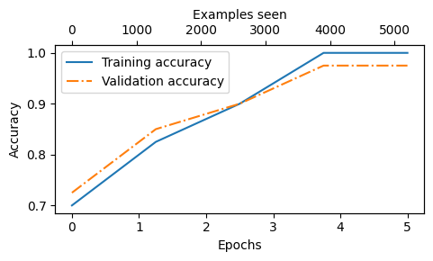

torch version: 2.5.1
tiktoken version: 0.7.00. Introduction
[Your existing introduction content here…]
1. Prerequisites
[Your existing prerequisites content here…]
2. Working with text data
This section explores techniques for processing and working with text data for language models.
Packages that are being used in this notebook:
- This chapter covers data preparation and sampling to get input data “ready” for the LLM

2.1 Understanding word embeddings
No code in this section
There are many forms of embeddings; we focus on text embeddings in this book

- LLMs work with embeddings in high-dimensional spaces (i.e., thousands of dimensions)
- Since we can’t visualize such high-dimensional spaces (we humans think in 1, 2, or 3 dimensions), the figure below illustrates a 2-dimensional embedding space

2.2 Tokenizing text
- In this section, we tokenize text, which means breaking text into smaller units, such as individual words and punctuation characters

Load raw text we want to work with
The Verdict by Edith Wharton is a public domain short story
(If you encounter an
ssl.SSLCertVerificationErrorwhen executing the previous code cell, it might be due to using an outdated Python version; you can find more information here on GitHub)
Total number of character: 20479
I HAD always thought Jack Gisburn rather a cheap genius--though a good fellow enough--so it was no - The goal is to tokenize and embed this text for an LLM
- Let’s develop a simple tokenizer based on some simple sample text that we can then later apply to the text above
- The following regular expression will split on whitespaces
['Hello,', ' ', 'world.', ' ', 'This,', ' ', 'is', ' ', 'a', ' ', 'test.']- We don’t only want to split on whitespaces but also commas and periods, so let’s modify the regular expression to do that as well
['Hello', ',', '', ' ', 'world', '.', '', ' ', 'This', ',', '', ' ', 'is', ' ', 'a', ' ', 'test', '.', '']- As we can see, this creates empty strings, let’s remove them
['Hello', ',', 'world', '.', 'This', ',', 'is', 'a', 'test', '.']- This looks pretty good, but let’s also handle other types of punctuation, such as periods, question marks, and so on
['Hello', ',', 'world', '.', 'Is', 'this', '--', 'a', 'test', '?']- This is pretty good, and we are now ready to apply this tokenization to the raw text

['I', 'HAD', 'always', 'thought', 'Jack', 'Gisburn', 'rather', 'a', 'cheap', 'genius', '--', 'though', 'a', 'good', 'fellow', 'enough', '--', 'so', 'it', 'was', 'no', 'great', 'surprise', 'to', 'me', 'to', 'hear', 'that', ',', 'in']- Let’s calculate the total number of tokens
46902.3 Converting tokens into token IDs
- Next, we convert the text tokens into token IDs that we can process via embedding layers later

- From these tokens, we can now build a vocabulary that consists of all the unique tokens
1130- Below are the first 50 entries in this vocabulary:
('!', 0)
('"', 1)
("'", 2)
('(', 3)
(')', 4)
(',', 5)
('--', 6)
('.', 7)
(':', 8)
(';', 9)
('?', 10)
('A', 11)
('Ah', 12)
('Among', 13)
('And', 14)
('Are', 15)
('Arrt', 16)
('As', 17)
('At', 18)
('Be', 19)
('Begin', 20)
('Burlington', 21)
('But', 22)
('By', 23)
('Carlo', 24)
('Chicago', 25)
('Claude', 26)
('Come', 27)
('Croft', 28)
('Destroyed', 29)
('Devonshire', 30)
('Don', 31)
('Dubarry', 32)
('Emperors', 33)
('Florence', 34)
('For', 35)
('Gallery', 36)
('Gideon', 37)
('Gisburn', 38)
('Gisburns', 39)
('Grafton', 40)
('Greek', 41)
('Grindle', 42)
('Grindles', 43)
('HAD', 44)
('Had', 45)
('Hang', 46)
('Has', 47)
('He', 48)
('Her', 49)
('Hermia', 50)- Below, we illustrate the tokenization of a short sample text using a small vocabulary:

Putting it now all together into a tokenizer class
The
encodefunction turns text into token IDsThe
decodefunction turns token IDs back into text

- We can use the tokenizer to encode (that is, tokenize) texts into integers
- These integers can then be embedded (later) as input of/for the LLM
[1, 56, 2, 850, 988, 602, 533, 746, 5, 1126, 596, 5, 1, 67, 7, 38, 851, 1108, 754, 793, 7]- We can decode the integers back into text
'" It\' s the last he painted, you know," Mrs. Gisburn said with pardonable pride.''" It\' s the last he painted, you know," Mrs. Gisburn said with pardonable pride.'2.4 Adding special context tokens
- It’s useful to add some “special” tokens for unknown words and to denote the end of a text

Some tokenizers use special tokens to help the LLM with additional context
Some of these special tokens are
[BOS](beginning of sequence) marks the beginning of text[EOS](end of sequence) marks where the text ends (this is usually used to concatenate multiple unrelated texts, e.g., two different Wikipedia articles or two different books, and so on)[PAD](padding) if we train LLMs with a batch size greater than 1 (we may include multiple texts with different lengths; with the padding token we pad the shorter texts to the longest length so that all texts have an equal length)
[UNK]to represent words that are not included in the vocabularyNote that GPT-2 does not need any of these tokens mentioned above but only uses an
<|endoftext|>token to reduce complexityThe
<|endoftext|>is analogous to the[EOS]token mentioned aboveGPT also uses the
<|endoftext|>for padding (since we typically use a mask when training on batched inputs, we would not attend padded tokens anyways, so it does not matter what these tokens are)GPT-2 does not use an
<UNK>token for out-of-vocabulary words; instead, GPT-2 uses a byte-pair encoding (BPE) tokenizer, which breaks down words into subword units which we will discuss in a later sectionWe use the
<|endoftext|>tokens between two independent sources of text:

- Let’s see what happens if we tokenize the following text:
--------------------------------------------------------------------------- KeyError Traceback (most recent call last) Cell In[17], line 5 1 tokenizer = SimpleTokenizerV1(vocab) 3 text = "Hello, do you like tea. Is this-- a test?" ----> 5 tokenizer.encode(text) Cell In[13], line 12, in SimpleTokenizerV1.encode(self, text) 7 preprocessed = re.split(r'([,.:;?_!"()\']|--|\s)', text) 9 preprocessed = [ 10 item.strip() for item in preprocessed if item.strip() 11 ] ---> 12 ids = [self.str_to_int[s] for s in preprocessed] 13 return ids Cell In[13], line 12, in <listcomp>(.0) 7 preprocessed = re.split(r'([,.:;?_!"()\']|--|\s)', text) 9 preprocessed = [ 10 item.strip() for item in preprocessed if item.strip() 11 ] ---> 12 ids = [self.str_to_int[s] for s in preprocessed] 13 return ids KeyError: 'Hello'
- The above produces an error because the word “Hello” is not contained in the vocabulary
- To deal with such cases, we can add special tokens like
"<|unk|>"to the vocabulary to represent unknown words - Since we are already extending the vocabulary, let’s add another token called
"<|endoftext|>"which is used in GPT-2 training to denote the end of a text (and it’s also used between concatenated text, like if our training datasets consists of multiple articles, books, etc.)
1132('younger', 1127)
('your', 1128)
('yourself', 1129)
('<|endoftext|>', 1130)
('<|unk|>', 1131)- We also need to adjust the tokenizer accordingly so that it knows when and how to use the new
<unk>token
Let’s try to tokenize text with the modified tokenizer:
Hello, do you like tea? <|endoftext|> In the sunlit terraces of the palace.[1131, 5, 355, 1126, 628, 975, 10, 1130, 55, 988, 956, 984, 722, 988, 1131, 7]'<|unk|>, do you like tea? <|endoftext|> In the sunlit terraces of the <|unk|>.'2.5 BytePair encoding
- GPT-2 used BytePair encoding (BPE) as its tokenizer
- it allows the model to break down words that aren’t in its predefined vocabulary into smaller subword units or even individual characters, enabling it to handle out-of-vocabulary words
- For instance, if GPT-2’s vocabulary doesn’t have the word “unfamiliarword,” it might tokenize it as [“unfam”, “iliar”, “word”] or some other subword breakdown, depending on its trained BPE merges
- The original BPE tokenizer can be found here: https://github.com/openai/gpt-2/blob/master/src/encoder.py
- In this chapter, we are using the BPE tokenizer from OpenAI’s open-source tiktoken library, which implements its core algorithms in Rust to improve computational performance
- I created a notebook in the ./bytepair_encoder that compares these two implementations side-by-side (tiktoken was about 5x faster on the sample text)
tiktoken version: 0.7.0[15496, 11, 466, 345, 588, 8887, 30, 220, 50256, 554, 262, 4252, 18250, 8812, 2114, 1659, 617, 34680, 27271, 13]Hello, do you like tea? <|endoftext|> In the sunlit terracesof someunknownPlace.- BPE tokenizers break down unknown words into subwords and individual characters:

2.6 Data sampling with a sliding window
- We train LLMs to generate one word at a time, so we want to prepare the training data accordingly where the next word in a sequence represents the target to predict:

5145- For each text chunk, we want the inputs and targets
- Since we want the model to predict the next word, the targets are the inputs shifted by one position to the right
x: [290, 4920, 2241, 287]
y: [4920, 2241, 287, 257]- One by one, the prediction would look like as follows:
[290] ----> 4920
[290, 4920] ----> 2241
[290, 4920, 2241] ----> 287
[290, 4920, 2241, 287] ----> 257 and ----> established
and established ----> himself
and established himself ----> in
and established himself in ----> aWe will take care of the next-word prediction in a later chapter after we covered the attention mechanism
For now, we implement a simple data loader that iterates over the input dataset and returns the inputs and targets shifted by one
Install and import PyTorch (see Appendix A for installation tips)
PyTorch version: 2.5.1- We use a sliding window approach, changing the position by +1:

Create dataset and dataloader that extract chunks from the input text dataset
Let’s test the dataloader with a batch size of 1 for an LLM with a context size of 4:
[tensor([[ 40, 367, 2885, 1464]]), tensor([[ 367, 2885, 1464, 1807]])][tensor([[ 367, 2885, 1464, 1807]]), tensor([[2885, 1464, 1807, 3619]])]- An example using stride equal to the context length (here: 4) as shown below:

- We can also create batched outputs
- Note that we increase the stride here so that we don’t have overlaps between the batches, since more overlap could lead to increased overfitting
Inputs:
tensor([[ 40, 367, 2885, 1464],
[ 1807, 3619, 402, 271],
[10899, 2138, 257, 7026],
[15632, 438, 2016, 257],
[ 922, 5891, 1576, 438],
[ 568, 340, 373, 645],
[ 1049, 5975, 284, 502],
[ 284, 3285, 326, 11]])
Targets:
tensor([[ 367, 2885, 1464, 1807],
[ 3619, 402, 271, 10899],
[ 2138, 257, 7026, 15632],
[ 438, 2016, 257, 922],
[ 5891, 1576, 438, 568],
[ 340, 373, 645, 1049],
[ 5975, 284, 502, 284],
[ 3285, 326, 11, 287]])2.7 Creating token embeddings
- The data is already almost ready for an LLM
- But lastly let us embed the tokens in a continuous vector representation using an embedding layer
- Usually, these embedding layers are part of the LLM itself and are updated (trained) during model training

Suppose we have the following four input examples with input ids 2, 3, 5, and 1 (after tokenization):
For the sake of simplicity, suppose we have a small vocabulary of only 6 words and we want to create embeddings of size 3:
This would result in a 6x3 weight matrix:
Parameter containing:
tensor([[ 0.3374, -0.1778, -0.1690],
[ 0.9178, 1.5810, 1.3010],
[ 1.2753, -0.2010, -0.1606],
[-0.4015, 0.9666, -1.1481],
[-1.1589, 0.3255, -0.6315],
[-2.8400, -0.7849, -1.4096]], requires_grad=True)For those who are familiar with one-hot encoding, the embedding layer approach above is essentially just a more efficient way of implementing one-hot encoding followed by matrix multiplication in a fully-connected layer, which is described in the supplementary code in ./embedding_vs_matmul
Because the embedding layer is just a more efficient implementation that is equivalent to the one-hot encoding and matrix-multiplication approach it can be seen as a neural network layer that can be optimized via backpropagation
To convert a token with id 3 into a 3-dimensional vector, we do the following:
tensor([[-0.4015, 0.9666, -1.1481]], grad_fn=<EmbeddingBackward0>)- Note that the above is the 4th row in the
embedding_layerweight matrix - To embed all four
input_idsvalues above, we do
tensor([[ 1.2753, -0.2010, -0.1606],
[-0.4015, 0.9666, -1.1481],
[-2.8400, -0.7849, -1.4096],
[ 0.9178, 1.5810, 1.3010]], grad_fn=<EmbeddingBackward0>)- An embedding layer is essentially a look-up operation:

- You may be interested in the bonus content comparing embedding layers with regular linear layers: ../03_bonus_embedding-vs-matmul
2.8 Encoding word positions
- Embedding layer convert IDs into identical vector representations regardless of where they are located in the input sequence:

- Positional embeddings are combined with the token embedding vector to form the input embeddings for a large language model:

The BytePair encoder has a vocabulary size of 50,257:
Suppose we want to encode the input tokens into a 256-dimensional vector representation:
If we sample data from the dataloader, we embed the tokens in each batch into a 256-dimensional vector
If we have a batch size of 8 with 4 tokens each, this results in a 8 x 4 x 256 tensor:
Token IDs:
tensor([[ 40, 367, 2885, 1464],
[ 1807, 3619, 402, 271],
[10899, 2138, 257, 7026],
[15632, 438, 2016, 257],
[ 922, 5891, 1576, 438],
[ 568, 340, 373, 645],
[ 1049, 5975, 284, 502],
[ 284, 3285, 326, 11]])
Inputs shape:
torch.Size([8, 4])torch.Size([8, 4, 256])- GPT-2 uses absolute position embeddings, so we just create another embedding layer:
torch.Size([4, 256])- To create the input embeddings used in an LLM, we simply add the token and the positional embeddings:
torch.Size([8, 4, 256])- In the initial phase of the input processing workflow, the input text is segmented into separate tokens
- Following this segmentation, these tokens are transformed into token IDs based on a predefined vocabulary:

Summary and takeaways
See the ./dataloader.ipynb code notebook, which is a concise version of the data loader that we implemented in this chapter and will need for training the GPT model in upcoming chapters.
See ./exercise-solutions.ipynb for the exercise solutions.
See the Byte Pair Encoding (BPE) Tokenizer From Scratch notebook if you are interested in learning how the GPT-2 tokenizer can be implemented and trained from scratch.
3. Coding Attention Mechanisms
Packages that are being used in this notebook:
torch version: 2.4.0- This chapter covers attention mechanisms, the engine of LLMs:


3.1 The problem with modeling long sequences
- No code in this section
- Translating a text word by word isn’t feasible due to the differences in grammatical structures between the source and target languages:

- Prior to the introduction of transformer models, encoder-decoder RNNs were commonly used for machine translation tasks
- In this setup, the encoder processes a sequence of tokens from the source language, using a hidden state—a kind of intermediate layer within the neural network—to generate a condensed representation of the entire input sequence:

3.2 Capturing data dependencies with attention mechanisms
- No code in this section
- Through an attention mechanism, the text-generating decoder segment of the network is capable of selectively accessing all input tokens, implying that certain input tokens hold more significance than others in the generation of a specific output token:

- Self-attention in transformers is a technique designed to enhance input representations by enabling each position in a sequence to engage with and determine the relevance of every other position within the same sequence

3.3 Attending to different parts of the input with self-attention
3.3.1 A simple self-attention mechanism without trainable weights
- This section explains a very simplified variant of self-attention, which does not contain any trainable weights
- This is purely for illustration purposes and NOT the attention mechanism that is used in transformers
- The next section, section 3.3.2, will extend this simple attention mechanism to implement the real self-attention mechanism
- Suppose we are given an input sequence \(x^{(1)}\) to \(x^{(T)}\)
- The input is a text (for example, a sentence like “Your journey starts with one step”) that has already been converted into token embeddings as described in chapter 2
- For instance, \(x^{(1)}\) is a d-dimensional vector representing the word “Your”, and so forth
- Goal: compute context vectors \(z^{(i)}\) for each input sequence element \(x^{(i)}\) in \(x^{(1)}\) to \(x^{(T)}\) (where \(z\) and \(x\) have the same dimension)
- A context vector \(z^{(i)}\) is a weighted sum over the inputs \(x^{(1)}\) to \(x^{(T)}\)
- The context vector is “context”-specific to a certain input
- Instead of \(x^{(i)}\) as a placeholder for an arbitrary input token, let’s consider the second input, \(x^{(2)}\)
- And to continue with a concrete example, instead of the placeholder \(z^{(i)}\), we consider the second output context vector, \(z^{(2)}\)
- The second context vector, \(z^{(2)}\), is a weighted sum over all inputs \(x^{(1)}\) to \(x^{(T)}\) weighted with respect to the second input element, \(x^{(2)}\)
- The attention weights are the weights that determine how much each of the input elements contributes to the weighted sum when computing \(z^{(2)}\)
- In short, think of \(z^{(2)}\) as a modified version of \(x^{(2)}\) that also incorporates information about all other input elements that are relevant to a given task at hand

(Please note that the numbers in this figure are truncated to one digit after the decimal point to reduce visual clutter; similarly, other figures may also contain truncated values)
By convention, the unnormalized attention weights are referred to as “attention scores” whereas the normalized attention scores, which sum to 1, are referred to as “attention weights”
The code below walks through the figure above step by step
Step 1: compute unnormalized attention scores \(\omega\)
Suppose we use the second input token as the query, that is, \(q^{(2)} = x^{(2)}\), we compute the unnormalized attention scores via dot products:
- \(\omega_{21} = x^{(1)} q^{(2)\top}\)
- \(\omega_{22} = x^{(2)} q^{(2)\top}\)
- \(\omega_{23} = x^{(3)} q^{(2)\top}\)
- …
- \(\omega_{2T} = x^{(T)} q^{(2)\top}\)
Above, \(\omega\) is the Greek letter “omega” used to symbolize the unnormalized attention scores
- The subscript “21” in \(\omega_{21}\) means that input sequence element 2 was used as a query against input sequence element 1
Suppose we have the following input sentence that is already embedded in 3-dimensional vectors as described in chapter 3 (we use a very small embedding dimension here for illustration purposes, so that it fits onto the page without line breaks):
(In this book, we follow the common machine learning and deep learning convention where training examples are represented as rows and feature values as columns; in the case of the tensor shown above, each row represents a word, and each column represents an embedding dimension)
The primary objective of this section is to demonstrate how the context vector \(z^{(2)}\) is calculated using the second input sequence, \(x^{(2)}\), as a query
The figure depicts the initial step in this process, which involves calculating the attention scores ω between \(x^{(2)}\) and all other input elements through a dot product operation

- We use input sequence element 2, \(x^{(2)}\), as an example to compute context vector \(z^{(2)}\); later in this section, we will generalize this to compute all context vectors.
- The first step is to compute the unnormalized attention scores by computing the dot product between the query \(x^{(2)}\) and all other input tokens:
tensor([0.9544, 1.4950, 1.4754, 0.8434, 0.7070, 1.0865])- Side note: a dot product is essentially a shorthand for multiplying two vectors elements-wise and summing the resulting products:
tensor(0.9544)
tensor(0.9544)- Step 2: normalize the unnormalized attention scores (“omegas”, \(\omega\)) so that they sum up to 1
- Here is a simple way to normalize the unnormalized attention scores to sum up to 1 (a convention, useful for interpretation, and important for training stability):

Attention weights: tensor([0.1455, 0.2278, 0.2249, 0.1285, 0.1077, 0.1656])
Sum: tensor(1.0000)- However, in practice, using the softmax function for normalization, which is better at handling extreme values and has more desirable gradient properties during training, is common and recommended.
- Here’s a naive implementation of a softmax function for scaling, which also normalizes the vector elements such that they sum up to 1:
Attention weights: tensor([0.1385, 0.2379, 0.2333, 0.1240, 0.1082, 0.1581])
Sum: tensor(1.)- The naive implementation above can suffer from numerical instability issues for large or small input values due to overflow and underflow issues
- Hence, in practice, it’s recommended to use the PyTorch implementation of softmax instead, which has been highly optimized for performance:
Attention weights: tensor([0.1385, 0.2379, 0.2333, 0.1240, 0.1082, 0.1581])
Sum: tensor(1.)- Step 3: compute the context vector \(z^{(2)}\) by multiplying the embedded input tokens, \(x^{(i)}\) with the attention weights and sum the resulting vectors:

tensor([0.4419, 0.6515, 0.5683])3.3.2 Computing attention weights for all input tokens
Generalize to all input sequence tokens:
- Above, we computed the attention weights and context vector for input 2 (as illustrated in the highlighted row in the figure below)
- Next, we are generalizing this computation to compute all attention weights and context vectors

(Please note that the numbers in this figure are truncated to two digits after the decimal point to reduce visual clutter; the values in each row should add up to 1.0 or 100%; similarly, digits in other figures are truncated)
In self-attention, the process starts with the calculation of attention scores, which are subsequently normalized to derive attention weights that total 1
These attention weights are then utilized to generate the context vectors through a weighted summation of the inputs

- Apply previous step 1 to all pairwise elements to compute the unnormalized attention score matrix:
tensor([[0.9995, 0.9544, 0.9422, 0.4753, 0.4576, 0.6310],
[0.9544, 1.4950, 1.4754, 0.8434, 0.7070, 1.0865],
[0.9422, 1.4754, 1.4570, 0.8296, 0.7154, 1.0605],
[0.4753, 0.8434, 0.8296, 0.4937, 0.3474, 0.6565],
[0.4576, 0.7070, 0.7154, 0.3474, 0.6654, 0.2935],
[0.6310, 1.0865, 1.0605, 0.6565, 0.2935, 0.9450]])- We can achieve the same as above more efficiently via matrix multiplication:
tensor([[0.9995, 0.9544, 0.9422, 0.4753, 0.4576, 0.6310],
[0.9544, 1.4950, 1.4754, 0.8434, 0.7070, 1.0865],
[0.9422, 1.4754, 1.4570, 0.8296, 0.7154, 1.0605],
[0.4753, 0.8434, 0.8296, 0.4937, 0.3474, 0.6565],
[0.4576, 0.7070, 0.7154, 0.3474, 0.6654, 0.2935],
[0.6310, 1.0865, 1.0605, 0.6565, 0.2935, 0.9450]])- Similar to step 2 previously, we normalize each row so that the values in each row sum to 1:
tensor([[0.2098, 0.2006, 0.1981, 0.1242, 0.1220, 0.1452],
[0.1385, 0.2379, 0.2333, 0.1240, 0.1082, 0.1581],
[0.1390, 0.2369, 0.2326, 0.1242, 0.1108, 0.1565],
[0.1435, 0.2074, 0.2046, 0.1462, 0.1263, 0.1720],
[0.1526, 0.1958, 0.1975, 0.1367, 0.1879, 0.1295],
[0.1385, 0.2184, 0.2128, 0.1420, 0.0988, 0.1896]])- Quick verification that the values in each row indeed sum to 1:
Row 2 sum: 1.0
All row sums: tensor([1.0000, 1.0000, 1.0000, 1.0000, 1.0000, 1.0000])- Apply previous step 3 to compute all context vectors:
tensor([[0.4421, 0.5931, 0.5790],
[0.4419, 0.6515, 0.5683],
[0.4431, 0.6496, 0.5671],
[0.4304, 0.6298, 0.5510],
[0.4671, 0.5910, 0.5266],
[0.4177, 0.6503, 0.5645]])- As a sanity check, the previously computed context vector \(z^{(2)} = [0.4419, 0.6515, 0.5683]\) can be found in the 2nd row in above:
Previous 2nd context vector: tensor([0.4419, 0.6515, 0.5683])3.4 Implementing self-attention with trainable weights
- A conceptual framework illustrating how the self-attention mechanism developed in this section integrates into the overall narrative and structure of this book and chapter

3.4.1 Computing the attention weights step by step
- In this section, we are implementing the self-attention mechanism that is used in the original transformer architecture, the GPT models, and most other popular LLMs
- This self-attention mechanism is also called “scaled dot-product attention”
- The overall idea is similar to before:
- We want to compute context vectors as weighted sums over the input vectors specific to a certain input element
- For the above, we need attention weights
- As you will see, there are only slight differences compared to the basic attention mechanism introduced earlier:
- The most notable difference is the introduction of weight matrices that are updated during model training
- These trainable weight matrices are crucial so that the model (specifically, the attention module inside the model) can learn to produce “good” context vectors

Implementing the self-attention mechanism step by step, we will start by introducing the three training weight matrices \(W_q\), \(W_k\), and \(W_v\)
These three matrices are used to project the embedded input tokens, \(x^{(i)}\), into query, key, and value vectors via matrix multiplication:
- Query vector: $q^{(i)} = x^{(i)},W_q $
- Key vector: $k^{(i)} = x^{(i)},W_k $
- Value vector: $v^{(i)} = x^{(i)},W_v $
The embedding dimensions of the input \(x\) and the query vector \(q\) can be the same or different, depending on the model’s design and specific implementation
In GPT models, the input and output dimensions are usually the same, but for illustration purposes, to better follow the computation, we choose different input and output dimensions here:
Below, we initialize the three weight matrices; note that we are setting
requires_grad=Falseto reduce clutter in the outputs for illustration purposes, but if we were to use the weight matrices for model training, we would setrequires_grad=Trueto update these matrices during model trainingNext we compute the query, key, and value vectors:
tensor([0.4306, 1.4551])- As we can see below, we successfully projected the 6 input tokens from a 3D onto a 2D embedding space:
keys.shape: torch.Size([6, 2])
values.shape: torch.Size([6, 2])- In the next step, step 2, we compute the unnormalized attention scores by computing the dot product between the query and each key vector:

tensor(1.8524)- Since we have 6 inputs, we have 6 attention scores for the given query vector:
tensor([1.2705, 1.8524, 1.8111, 1.0795, 0.5577, 1.5440])
- Next, in step 3, we compute the attention weights (normalized attention scores that sum up to 1) using the softmax function we used earlier
- The difference to earlier is that we now scale the attention scores by dividing them by the square root of the embedding dimension, \(\sqrt{d_k}\) (i.e.,
d_k**0.5):
tensor([0.1500, 0.2264, 0.2199, 0.1311, 0.0906, 0.1820])
- In step 4, we now compute the context vector for input query vector 2:
tensor([0.3061, 0.8210])3.4.2 Implementing a compact SelfAttention class
- Putting it all together, we can implement the self-attention mechanism as follows:
tensor([[0.2996, 0.8053],
[0.3061, 0.8210],
[0.3058, 0.8203],
[0.2948, 0.7939],
[0.2927, 0.7891],
[0.2990, 0.8040]], grad_fn=<MmBackward0>)
- We can streamline the implementation above using PyTorch’s Linear layers, which are equivalent to a matrix multiplication if we disable the bias units
- Another big advantage of using
nn.Linearover our manualnn.Parameter(torch.rand(...)approach is thatnn.Linearhas a preferred weight initialization scheme, which leads to more stable model training
tensor([[-0.0739, 0.0713],
[-0.0748, 0.0703],
[-0.0749, 0.0702],
[-0.0760, 0.0685],
[-0.0763, 0.0679],
[-0.0754, 0.0693]], grad_fn=<MmBackward0>)- Note that
SelfAttention_v1andSelfAttention_v2give different outputs because they use different initial weights for the weight matrices
3.5 Hiding future words with causal attention
- In causal attention, the attention weights above the diagonal are masked, ensuring that for any given input, the LLM is unable to utilize future tokens while calculating the context vectors with the attention weight

3.5.1 Applying a causal attention mask
- In this section, we are converting the previous self-attention mechanism into a causal self-attention mechanism
- Causal self-attention ensures that the model’s prediction for a certain position in a sequence is only dependent on the known outputs at previous positions, not on future positions
- In simpler words, this ensures that each next word prediction should only depend on the preceding words
- To achieve this, for each given token, we mask out the future tokens (the ones that come after the current token in the input text):

- To illustrate and implement causal self-attention, let’s work with the attention scores and weights from the previous section:
tensor([[0.1921, 0.1646, 0.1652, 0.1550, 0.1721, 0.1510],
[0.2041, 0.1659, 0.1662, 0.1496, 0.1665, 0.1477],
[0.2036, 0.1659, 0.1662, 0.1498, 0.1664, 0.1480],
[0.1869, 0.1667, 0.1668, 0.1571, 0.1661, 0.1564],
[0.1830, 0.1669, 0.1670, 0.1588, 0.1658, 0.1585],
[0.1935, 0.1663, 0.1666, 0.1542, 0.1666, 0.1529]],
grad_fn=<SoftmaxBackward0>)- The simplest way to mask out future attention weights is by creating a mask via PyTorch’s tril function with elements below the main diagonal (including the diagonal itself) set to 1 and above the main diagonal set to 0:
tensor([[1., 0., 0., 0., 0., 0.],
[1., 1., 0., 0., 0., 0.],
[1., 1., 1., 0., 0., 0.],
[1., 1., 1., 1., 0., 0.],
[1., 1., 1., 1., 1., 0.],
[1., 1., 1., 1., 1., 1.]])- Then, we can multiply the attention weights with this mask to zero out the attention scores above the diagonal:
tensor([[0.1921, 0.0000, 0.0000, 0.0000, 0.0000, 0.0000],
[0.2041, 0.1659, 0.0000, 0.0000, 0.0000, 0.0000],
[0.2036, 0.1659, 0.1662, 0.0000, 0.0000, 0.0000],
[0.1869, 0.1667, 0.1668, 0.1571, 0.0000, 0.0000],
[0.1830, 0.1669, 0.1670, 0.1588, 0.1658, 0.0000],
[0.1935, 0.1663, 0.1666, 0.1542, 0.1666, 0.1529]],
grad_fn=<MulBackward0>)However, if the mask were applied after softmax, like above, it would disrupt the probability distribution created by softmax
Softmax ensures that all output values sum to 1
Masking after softmax would require re-normalizing the outputs to sum to 1 again, which complicates the process and might lead to unintended effects
To make sure that the rows sum to 1, we can normalize the attention weights as follows:
tensor([[1.0000, 0.0000, 0.0000, 0.0000, 0.0000, 0.0000],
[0.5517, 0.4483, 0.0000, 0.0000, 0.0000, 0.0000],
[0.3800, 0.3097, 0.3103, 0.0000, 0.0000, 0.0000],
[0.2758, 0.2460, 0.2462, 0.2319, 0.0000, 0.0000],
[0.2175, 0.1983, 0.1984, 0.1888, 0.1971, 0.0000],
[0.1935, 0.1663, 0.1666, 0.1542, 0.1666, 0.1529]],
grad_fn=<DivBackward0>)- While we are technically done with coding the causal attention mechanism now, let’s briefly look at a more efficient approach to achieve the same as above
- So, instead of zeroing out attention weights above the diagonal and renormalizing the results, we can mask the unnormalized attention scores above the diagonal with negative infinity before they enter the softmax function:

tensor([[0.2899, -inf, -inf, -inf, -inf, -inf],
[0.4656, 0.1723, -inf, -inf, -inf, -inf],
[0.4594, 0.1703, 0.1731, -inf, -inf, -inf],
[0.2642, 0.1024, 0.1036, 0.0186, -inf, -inf],
[0.2183, 0.0874, 0.0882, 0.0177, 0.0786, -inf],
[0.3408, 0.1270, 0.1290, 0.0198, 0.1290, 0.0078]],
grad_fn=<MaskedFillBackward0>)- As we can see below, now the attention weights in each row correctly sum to 1 again:
tensor([[1.0000, 0.0000, 0.0000, 0.0000, 0.0000, 0.0000],
[0.5517, 0.4483, 0.0000, 0.0000, 0.0000, 0.0000],
[0.3800, 0.3097, 0.3103, 0.0000, 0.0000, 0.0000],
[0.2758, 0.2460, 0.2462, 0.2319, 0.0000, 0.0000],
[0.2175, 0.1983, 0.1984, 0.1888, 0.1971, 0.0000],
[0.1935, 0.1663, 0.1666, 0.1542, 0.1666, 0.1529]],
grad_fn=<SoftmaxBackward0>)3.5.2 Masking additional attention weights with dropout
In addition, we also apply dropout to reduce overfitting during training
Dropout can be applied in several places:
- for example, after computing the attention weights;
- or after multiplying the attention weights with the value vectors
Here, we will apply the dropout mask after computing the attention weights because it’s more common
Furthermore, in this specific example, we use a dropout rate of 50%, which means randomly masking out half of the attention weights. (When we train the GPT model later, we will use a lower dropout rate, such as 0.1 or 0.2

- If we apply a dropout rate of 0.5 (50%), the non-dropped values will be scaled accordingly by a factor of 1/0.5 = 2
- The scaling is calculated by the formula 1 / (1 -
dropout_rate)
tensor([[2., 2., 0., 2., 2., 0.],
[0., 0., 0., 2., 0., 2.],
[2., 2., 2., 2., 0., 2.],
[0., 2., 2., 0., 0., 2.],
[0., 2., 0., 2., 0., 2.],
[0., 2., 2., 2., 2., 0.]])tensor([[2.0000, 0.0000, 0.0000, 0.0000, 0.0000, 0.0000],
[0.0000, 0.0000, 0.0000, 0.0000, 0.0000, 0.0000],
[0.7599, 0.6194, 0.6206, 0.0000, 0.0000, 0.0000],
[0.0000, 0.4921, 0.4925, 0.0000, 0.0000, 0.0000],
[0.0000, 0.3966, 0.0000, 0.3775, 0.0000, 0.0000],
[0.0000, 0.3327, 0.3331, 0.3084, 0.3331, 0.0000]],
grad_fn=<MulBackward0>)- Note that the resulting dropout outputs may look different depending on your operating system; you can read more about this inconsistency here on the PyTorch issue tracker
3.5.3 Implementing a compact causal self-attention class
- Now, we are ready to implement a working implementation of self-attention, including the causal and dropout masks
- One more thing is to implement the code to handle batches consisting of more than one input so that our
CausalAttentionclass supports the batch outputs produced by the data loader we implemented in chapter 2 - For simplicity, to simulate such batch input, we duplicate the input text example:
torch.Size([2, 6, 3])tensor([[[-0.4519, 0.2216],
[-0.5874, 0.0058],
[-0.6300, -0.0632],
[-0.5675, -0.0843],
[-0.5526, -0.0981],
[-0.5299, -0.1081]],
[[-0.4519, 0.2216],
[-0.5874, 0.0058],
[-0.6300, -0.0632],
[-0.5675, -0.0843],
[-0.5526, -0.0981],
[-0.5299, -0.1081]]], grad_fn=<UnsafeViewBackward0>)
context_vecs.shape: torch.Size([2, 6, 2])- Note that dropout is only applied during training, not during inference

3.6 Extending single-head attention to multi-head attention
3.6.1 Stacking multiple single-head attention layers
Below is a summary of the self-attention implemented previously (causal and dropout masks not shown for simplicity)
This is also called single-head attention:

- We simply stack multiple single-head attention modules to obtain a multi-head attention module:

- The main idea behind multi-head attention is to run the attention mechanism multiple times (in parallel) with different, learned linear projections. This allows the model to jointly attend to information from different representation subspaces at different positions.
tensor([[[-0.4519, 0.2216, 0.4772, 0.1063],
[-0.5874, 0.0058, 0.5891, 0.3257],
[-0.6300, -0.0632, 0.6202, 0.3860],
[-0.5675, -0.0843, 0.5478, 0.3589],
[-0.5526, -0.0981, 0.5321, 0.3428],
[-0.5299, -0.1081, 0.5077, 0.3493]],
[[-0.4519, 0.2216, 0.4772, 0.1063],
[-0.5874, 0.0058, 0.5891, 0.3257],
[-0.6300, -0.0632, 0.6202, 0.3860],
[-0.5675, -0.0843, 0.5478, 0.3589],
[-0.5526, -0.0981, 0.5321, 0.3428],
[-0.5299, -0.1081, 0.5077, 0.3493]]], grad_fn=<CatBackward0>)
context_vecs.shape: torch.Size([2, 6, 4])- In the implementation above, the embedding dimension is 4, because we
d_out=2as the embedding dimension for the key, query, and value vectors as well as the context vector. And since we have 2 attention heads, we have the output embedding dimension 2*2=4
3.6.2 Implementing multi-head attention with weight splits
While the above is an intuitive and fully functional implementation of multi-head attention (wrapping the single-head attention
CausalAttentionimplementation from earlier), we can write a stand-alone class calledMultiHeadAttentionto achieve the sameWe don’t concatenate single attention heads for this stand-alone
MultiHeadAttentionclassInstead, we create single W_query, W_key, and W_value weight matrices and then split those into individual matrices for each attention head:
tensor([[[0.3190, 0.4858],
[0.2943, 0.3897],
[0.2856, 0.3593],
[0.2693, 0.3873],
[0.2639, 0.3928],
[0.2575, 0.4028]],
[[0.3190, 0.4858],
[0.2943, 0.3897],
[0.2856, 0.3593],
[0.2693, 0.3873],
[0.2639, 0.3928],
[0.2575, 0.4028]]], grad_fn=<ViewBackward0>)
context_vecs.shape: torch.Size([2, 6, 2])- Note that the above is essentially a rewritten version of
MultiHeadAttentionWrapperthat is more efficient - The resulting output looks a bit different since the random weight initializations differ, but both are fully functional implementations that can be used in the GPT class we will implement in the upcoming chapters
- Note that in addition, we added a linear projection layer (
self.out_proj) to theMultiHeadAttentionclass above. This is simply a linear transformation that doesn’t change the dimensions. It’s a standard convention to use such a projection layer in LLM implementation, but it’s not strictly necessary (recent research has shown that it can be removed without affecting the modeling performance; see the further reading section at the end of this chapter)

Note that if you are interested in a compact and efficient implementation of the above, you can also consider the
torch.nn.MultiheadAttentionclass in PyTorchSince the above implementation may look a bit complex at first glance, let’s look at what happens when executing
attn_scores = queries @ keys.transpose(2, 3):
tensor([[[[1.3208, 1.1631, 1.2879],
[1.1631, 2.2150, 1.8424],
[1.2879, 1.8424, 2.0402]],
[[0.4391, 0.7003, 0.5903],
[0.7003, 1.3737, 1.0620],
[0.5903, 1.0620, 0.9912]]]])In this case, the matrix multiplication implementation in PyTorch will handle the 4-dimensional input tensor so that the matrix multiplication is carried out between the 2 last dimensions (num_tokens, head_dim) and then repeated for the individual heads
For instance, the following becomes a more compact way to compute the matrix multiplication for each head separately:
First head:
tensor([[1.3208, 1.1631, 1.2879],
[1.1631, 2.2150, 1.8424],
[1.2879, 1.8424, 2.0402]])
Second head:
tensor([[0.4391, 0.7003, 0.5903],
[0.7003, 1.3737, 1.0620],
[0.5903, 1.0620, 0.9912]])Summary and takeaways
- See the ./multihead-attention.ipynb code notebook, which is a concise version of the data loader (chapter 2) plus the multi-head attention class that we implemented in this chapter and will need for training the GPT model in upcoming chapters
- You can find the exercise solutions in ./exercise-solutions.ipynb
4. Implementing a GPT model from Scratch To Generate Text
matplotlib version: 3.10.0
torch version: 2.6.0
tiktoken version: 0.9.0- In this chapter, we implement a GPT-like LLM architecture; the next chapter will focus on training this LLM

4.1 Coding an LLM architecture
- Chapter 1 discussed models like GPT and Llama, which generate words sequentially and are based on the decoder part of the original transformer architecture
- Therefore, these LLMs are often referred to as “decoder-like” LLMs
- Compared to conventional deep learning models, LLMs are larger, mainly due to their vast number of parameters, not the amount of code
- We’ll see that many elements are repeated in an LLM’s architecture

In previous chapters, we used small embedding dimensions for token inputs and outputs for ease of illustration, ensuring they fit on a single page
In this chapter, we consider embedding and model sizes akin to a small GPT-2 model
We’ll specifically code the architecture of the smallest GPT-2 model (124 million parameters), as outlined in Radford et al.’s Language Models are Unsupervised Multitask Learners (note that the initial report lists it as 117M parameters, but this was later corrected in the model weight repository)
Chapter 6 will show how to load pretrained weights into our implementation, which will be compatible with model sizes of 345, 762, and 1542 million parameters
Configuration details for the 124 million parameter GPT-2 model include:
We use short variable names to avoid long lines of code later
"vocab_size"indicates a vocabulary size of 50,257 words, supported by the BPE tokenizer discussed in Chapter 2"context_length"represents the model’s maximum input token count, as enabled by positional embeddings covered in Chapter 2"emb_dim"is the embedding size for token inputs, converting each input token into a 768-dimensional vector"n_heads"is the number of attention heads in the multi-head attention mechanism implemented in Chapter 3"n_layers"is the number of transformer blocks within the model, which we’ll implement in upcoming sections"drop_rate"is the dropout mechanism’s intensity, discussed in Chapter 3; 0.1 means dropping 10% of hidden units during training to mitigate overfitting"qkv_bias"decides if theLinearlayers in the multi-head attention mechanism (from Chapter 3) should include a bias vector when computing query (Q), key (K), and value (V) tensors; we’ll disable this option, which is standard practice in modern LLMs; however, we’ll revisit this later when loading pretrained GPT-2 weights from OpenAI into our reimplementation in chapter 5


tensor([[6109, 3626, 6100, 345],
[6109, 1110, 6622, 257]])Output shape: torch.Size([2, 4, 50257])
tensor([[[-1.2034, 0.3201, -0.7130, ..., -1.5548, -0.2390, -0.4667],
[-0.1192, 0.4539, -0.4432, ..., 0.2392, 1.3469, 1.2430],
[ 0.5307, 1.6720, -0.4695, ..., 1.1966, 0.0111, 0.5835],
[ 0.0139, 1.6754, -0.3388, ..., 1.1586, -0.0435, -1.0400]],
[[-1.0908, 0.1798, -0.9484, ..., -1.6047, 0.2439, -0.4530],
[-0.7860, 0.5581, -0.0610, ..., 0.4835, -0.0077, 1.6621],
[ 0.3567, 1.2698, -0.6398, ..., -0.0162, -0.1296, 0.3717],
[-0.2407, -0.7349, -0.5102, ..., 2.0057, -0.3694, 0.1814]]],
grad_fn=<UnsafeViewBackward0>)Note
- If you are running this code on Windows or Linux, the resulting values above may look like as follows:
Output shape: torch.Size([2, 4, 50257])
tensor([[[-0.9289, 0.2748, -0.7557, ..., -1.6070, 0.2702, -0.5888],
[-0.4476, 0.1726, 0.5354, ..., -0.3932, 1.5285, 0.8557],
[ 0.5680, 1.6053, -0.2155, ..., 1.1624, 0.1380, 0.7425],
[ 0.0447, 2.4787, -0.8843, ..., 1.3219, -0.0864, -0.5856]],
[[-1.5474, -0.0542, -1.0571, ..., -1.8061, -0.4494, -0.6747],
[-0.8422, 0.8243, -0.1098, ..., -0.1434, 0.2079, 1.2046],
[ 0.1355, 1.1858, -0.1453, ..., 0.0869, -0.1590, 0.1552],
[ 0.1666, -0.8138, 0.2307, ..., 2.5035, -0.3055, -0.3083]]],
grad_fn=<UnsafeViewBackward0>)- Since these are just random numbers, this is not a reason for concern, and you can proceed with the remainder of the chapter without issues
- One possible reason for this discrepancy is the differing behavior of
nn.Dropoutacross operating systems, depending on how PyTorch was compiled, as discussed here on the PyTorch issue tracker
4.2 Normalizing activations with layer normalization
- Layer normalization, also known as LayerNorm (Ba et al. 2016), centers the activations of a neural network layer around a mean of 0 and normalizes their variance to 1
- This stabilizes training and enables faster convergence to effective weights
- Layer normalization is applied both before and after the multi-head attention module within the transformer block, which we will implement later; it’s also applied before the final output layer

- Let’s see how layer normalization works by passing a small input sample through a simple neural network layer:
tensor([[0.2260, 0.3470, 0.0000, 0.2216, 0.0000, 0.0000],
[0.2133, 0.2394, 0.0000, 0.5198, 0.3297, 0.0000]],
grad_fn=<ReluBackward0>)- Let’s compute the mean and variance for each of the 2 inputs above:
Mean:
tensor([[0.1324],
[0.2170]], grad_fn=<MeanBackward1>)
Variance:
tensor([[0.0231],
[0.0398]], grad_fn=<VarBackward0>)- The normalization is applied to each of the two inputs (rows) independently; using dim=-1 applies the calculation across the last dimension (in this case, the feature dimension) instead of the row dimension

- Subtracting the mean and dividing by the square-root of the variance (standard deviation) centers the inputs to have a mean of 0 and a variance of 1 across the column (feature) dimension:
Normalized layer outputs:
tensor([[ 0.6159, 1.4126, -0.8719, 0.5872, -0.8719, -0.8719],
[-0.0189, 0.1121, -1.0876, 1.5173, 0.5647, -1.0876]],
grad_fn=<DivBackward0>)
Mean:
tensor([[-5.9605e-08],
[ 1.9868e-08]], grad_fn=<MeanBackward1>)
Variance:
tensor([[1.0000],
[1.0000]], grad_fn=<VarBackward0>)- Each input is centered at 0 and has a unit variance of 1; to improve readability, we can disable PyTorch’s scientific notation:
Mean:
tensor([[ -0.0000],
[ 0.0000]], grad_fn=<MeanBackward1>)
Variance:
tensor([[1.0000],
[1.0000]], grad_fn=<VarBackward0>)- Above, we normalized the features of each input
- Now, using the same idea, we can implement a
LayerNormclass:
Scale and shift
- Note that in addition to performing the normalization by subtracting the mean and dividing by the variance, we added two trainable parameters, a
scaleand ashiftparameter - The initial
scale(multiplying by 1) andshift(adding 0) values don’t have any effect; however,scaleandshiftare trainable parameters that the LLM automatically adjusts during training if it is determined that doing so would improve the model’s performance on its training task - This allows the model to learn appropriate scaling and shifting that best suit the data it is processing
- Note that we also add a smaller value (
eps) before computing the square root of the variance; this is to avoid division-by-zero errors if the variance is 0
Biased variance - In the variance calculation above, setting unbiased=False means using the formula \(\frac{\sum_i (x_i - \bar{x})^2}{n}\) to compute the variance where n is the sample size (here, the number of features or columns); this formula does not include Bessel’s correction (which uses n-1 in the denominator), thus providing a biased estimate of the variance - For LLMs, where the embedding dimension n is very large, the difference between using n and n-1 is negligible - However, GPT-2 was trained with a biased variance in the normalization layers, which is why we also adopted this setting for compatibility reasons with the pretrained weights that we will load in later chapters
- Let’s now try out
LayerNormin practice:
Mean:
tensor([[ -0.0000],
[ 0.0000]], grad_fn=<MeanBackward1>)
Variance:
tensor([[1.0000],
[1.0000]], grad_fn=<VarBackward0>)
4.3 Implementing a feed forward network with GELU activations
In this section, we implement a small neural network submodule that is used as part of the transformer block in LLMs
We start with the activation function
In deep learning, ReLU (Rectified Linear Unit) activation functions are commonly used due to their simplicity and effectiveness in various neural network architectures
In LLMs, various other types of activation functions are used beyond the traditional ReLU; two notable examples are GELU (Gaussian Error Linear Unit) and SwiGLU (Swish-Gated Linear Unit)
GELU and SwiGLU are more complex, smooth activation functions incorporating Gaussian and sigmoid-gated linear units, respectively, offering better performance for deep learning models, unlike the simpler, piecewise linear function of ReLU
GELU (Hendrycks and Gimpel 2016) can be implemented in several ways; the exact version is defined as GELU(x)=x⋅Φ(x), where Φ(x) is the cumulative distribution function of the standard Gaussian distribution.
In practice, it’s common to implement a computationally cheaper approximation: \(\text{GELU}(x) \approx 0.5 \cdot x \cdot \left(1 + \tanh\left[\sqrt{\frac{2}{\pi}} \cdot \left(x + 0.044715 \cdot x^3\right)\right]\right)\) (the original GPT-2 model was also trained with this approximation)

As we can see, ReLU is a piecewise linear function that outputs the input directly if it is positive; otherwise, it outputs zero
GELU is a smooth, non-linear function that approximates ReLU but with a non-zero gradient for negative values (except at approximately -0.75)
Next, let’s implement the small neural network module,
FeedForward, that we will be using in the LLM’s transformer block later:
768
torch.Size([2, 3, 768])

4.4 Adding shortcut connections
- Next, let’s talk about the concept behind shortcut connections, also called skip or residual connections
- Originally, shortcut connections were proposed in deep networks for computer vision (residual networks) to mitigate vanishing gradient problems
- A shortcut connection creates an alternative shorter path for the gradient to flow through the network
- This is achieved by adding the output of one layer to the output of a later layer, usually skipping one or more layers in between
- Let’s illustrate this idea with a small example network:

In code, it looks like this:
Let’s print the gradient values first without shortcut connections:
layers.0.0.weight has gradient mean of 0.00020173587836325169
layers.1.0.weight has gradient mean of 0.00012011159560643137
layers.2.0.weight has gradient mean of 0.0007152039906941354
layers.3.0.weight has gradient mean of 0.0013988736318424344
layers.4.0.weight has gradient mean of 0.005049645435065031- Next, let’s print the gradient values with shortcut connections:
layers.0.0.weight has gradient mean of 0.22169792652130127
layers.1.0.weight has gradient mean of 0.20694106817245483
layers.2.0.weight has gradient mean of 0.32896995544433594
layers.3.0.weight has gradient mean of 0.2665732204914093
layers.4.0.weight has gradient mean of 1.3258540630340576- As we can see based on the output above, shortcut connections prevent the gradients from vanishing in the early layers (towards
layer.0) - We will use this concept of a shortcut connection next when we implement a transformer block
4.5 Connecting attention and linear layers in a transformer block
- In this section, we now combine the previous concepts into a so-called transformer block
- A transformer block combines the causal multi-head attention module from the previous chapter with the linear layers, the feed forward neural network we implemented in an earlier section
- In addition, the transformer block also uses dropout and shortcut connections

- Suppose we have 2 input samples with 6 tokens each, where each token is a 768-dimensional embedding vector; then this transformer block applies self-attention, followed by linear layers, to produce an output of similar size
- You can think of the output as an augmented version of the context vectors we discussed in the previous chapter
Input shape: torch.Size([2, 4, 768])
Output shape: torch.Size([2, 4, 768])
4.6 Coding the GPT model
- We are almost there: now let’s plug in the transformer block into the architecture we coded at the very beginning of this chapter so that we obtain a usable GPT architecture
- Note that the transformer block is repeated multiple times; in the case of the smallest 124M GPT-2 model, we repeat it 12 times:

The corresponding code implementation, where
cfg["n_layers"] = 12:Using the configuration of the 124M parameter model, we can now instantiate this GPT model with random initial weights as follows:
Input batch:
tensor([[6109, 3626, 6100, 345],
[6109, 1110, 6622, 257]])
Output shape: torch.Size([2, 4, 50257])
tensor([[[ 0.3613, 0.4222, -0.0711, ..., 0.3483, 0.4661, -0.2838],
[-0.1792, -0.5660, -0.9485, ..., 0.0477, 0.5181, -0.3168],
[ 0.7120, 0.0332, 0.1085, ..., 0.1018, -0.4327, -0.2553],
[-1.0076, 0.3418, -0.1190, ..., 0.7195, 0.4023, 0.0532]],
[[-0.2564, 0.0900, 0.0335, ..., 0.2659, 0.4454, -0.6806],
[ 0.1230, 0.3653, -0.2074, ..., 0.7705, 0.2710, 0.2246],
[ 1.0558, 1.0318, -0.2800, ..., 0.6936, 0.3205, -0.3178],
[-0.1565, 0.3926, 0.3288, ..., 1.2630, -0.1858, 0.0388]]],
grad_fn=<UnsafeViewBackward0>)- We will train this model in the next chapter
- However, a quick note about its size: we previously referred to it as a 124M parameter model; we can double check this number as follows:
Total number of parameters: 163,009,536- As we see above, this model has 163M, not 124M parameters; why?
- In the original GPT-2 paper, the researchers applied weight tying, which means that they reused the token embedding layer (
tok_emb) as the output layer, which means settingself.out_head.weight = self.tok_emb.weight - The token embedding layer projects the 50,257-dimensional one-hot encoded input tokens to a 768-dimensional embedding representation
- The output layer projects 768-dimensional embeddings back into a 50,257-dimensional representation so that we can convert these back into words (more about that in the next section)
- So, the embedding and output layer have the same number of weight parameters, as we can see based on the shape of their weight matrices
- However, a quick note about its size: we previously referred to it as a 124M parameter model; we can double check this number as follows:
Token embedding layer shape: torch.Size([50257, 768])
Output layer shape: torch.Size([50257, 768])- In the original GPT-2 paper, the researchers reused the token embedding matrix as an output matrix
- Correspondingly, if we subtracted the number of parameters of the output layer, we’d get a 124M parameter model:
Number of trainable parameters considering weight tying: 124,412,160- In practice, I found it easier to train the model without weight-tying, which is why we didn’t implement it here
- However, we will revisit and apply this weight-tying idea later when we load the pretrained weights in chapter 5
- Lastly, we can compute the memory requirements of the model as follows, which can be a helpful reference point:
Total size of the model: 621.83 MBExercise: you can try the following other configurations, which are referenced in the GPT-2 paper, as well.
- GPT2-small (the 124M configuration we already implemented):
- “emb_dim” = 768
- “n_layers” = 12
- “n_heads” = 12
- GPT2-medium:
- “emb_dim” = 1024
- “n_layers” = 24
- “n_heads” = 16
- GPT2-large:
- “emb_dim” = 1280
- “n_layers” = 36
- “n_heads” = 20
- GPT2-XL:
- “emb_dim” = 1600
- “n_layers” = 48
- “n_heads” = 25
- GPT2-small (the 124M configuration we already implemented):
4.7 Generating text
- LLMs like the GPT model we implemented above are used to generate one word at a time

- The following
generate_text_simplefunction implements greedy decoding, which is a simple and fast method to generate text - In greedy decoding, at each step, the model chooses the word (or token) with the highest probability as its next output (the highest logit corresponds to the highest probability, so we technically wouldn’t even have to compute the softmax function explicitly)
- In the next chapter, we will implement a more advanced
generate_textfunction - The figure below depicts how the GPT model, given an input context, generates the next word token

- The
generate_text_simpleabove implements an iterative process, where it creates one token at a time

- Let’s prepare an input example:
encoded: [15496, 11, 314, 716]
encoded_tensor.shape: torch.Size([1, 4])Output: tensor([[15496, 11, 314, 716, 27018, 24086, 47843, 30961, 42348, 7267]])
Output length: 10- Remove batch dimension and convert back into text:
Hello, I am Featureiman Byeswickattribute argue- Note that the model is untrained; hence the random output texts above
- We will train the model in the next chapter
Summary and takeaways
- See the ./gpt.py script, a self-contained script containing the GPT model we implement in this Jupyter notebook
- You can find the exercise solutions in ./exercise-solutions.ipynb
5. Pretraining on Unlabeled Data
{ “cells”: [ { “cell_type”: “markdown”, “id”: “0a3bdf9e-2ff0-4a57-abab-ede2d955a237”, “metadata”: {}, “source”: [ “- In this chapter, we implement the training loop and code for basic model evaluation to pretrain an LLM”, “- At the end of this chapter, we also load openly available pretrained weights from OpenAI into our model” ] }, { “cell_type”: “markdown”, “id”: “efd27fcc-2886-47cb-b544-046c2c31f02a”, “metadata”: {}, “source”: [ “ ” ] }, { “cell_type”: “markdown”, “id”: “0d214765-7a73-42d5-95e9-302154b29db9”, “metadata”: {}, “source”: [ “- The topics covered in this chapter are shown below” ] }, { “cell_type”: “markdown”, “id”: “f67711d4-8391-4fee-aeef-07ea53dd5841”, “metadata”: {}, “source”: [ “
” ] }, { “cell_type”: “markdown”, “id”: “0d214765-7a73-42d5-95e9-302154b29db9”, “metadata”: {}, “source”: [ “- The topics covered in this chapter are shown below” ] }, { “cell_type”: “markdown”, “id”: “f67711d4-8391-4fee-aeef-07ea53dd5841”, “metadata”: {}, “source”: [ “ ” ] }, { “cell_type”: “markdown”, “id”: “0d824183-145c-4865-89e1-1f0d0a338f19”, “metadata”: { “id”: “0d824183-145c-4865-89e1-1f0d0a338f19” }, “source”: [ “## 5.1 Evaluating generative text models” ] }, { “cell_type”: “markdown”, “id”: “a3350f8c-5181-4f9b-a789-4523105e98f2”, “metadata”: {}, “source”: [ “- We start this section with a brief recap of initializing a GPT model using the code from the previous chapter”, “- Then, we discuss basic evaluation metrics for LLMs”, “- Lastly, in this section, we apply these evaluation metrics to a training and validation dataset” ] }, { “cell_type”: “markdown”, “id”: “bdc1cf3f-82d8-46c7-9ecc-58979ce87cdd”, “metadata”: { “id”: “bdc1cf3f-82d8-46c7-9ecc-58979ce87cdd” }, “source”: [ “### 5.1.1 Using GPT to generate text” ] }, { “cell_type”: “markdown”, “id”: “5b3415fd-9f4a-4548-908e-9dfa56edc9bc”, “metadata”: {}, “source”: [ “- We initialize a GPT model using the code from the previous chapter” ] }, { “cell_type”: “code”, “execution_count”: 2, “id”: “86000d74-624a-48f0-86da-f41926cb9e04”, “metadata”: { “colab”: { “base_uri”: “https://localhost:8080/” }, “id”: “86000d74-624a-48f0-86da-f41926cb9e04”, “outputId”: “ad482cfd-5a62-4f0d-e1e0-008d6457f512” }, “outputs”: [], “source”: [ “import torch”, “from previous_chapters import GPTModel”, “# If the
” ] }, { “cell_type”: “markdown”, “id”: “0d824183-145c-4865-89e1-1f0d0a338f19”, “metadata”: { “id”: “0d824183-145c-4865-89e1-1f0d0a338f19” }, “source”: [ “## 5.1 Evaluating generative text models” ] }, { “cell_type”: “markdown”, “id”: “a3350f8c-5181-4f9b-a789-4523105e98f2”, “metadata”: {}, “source”: [ “- We start this section with a brief recap of initializing a GPT model using the code from the previous chapter”, “- Then, we discuss basic evaluation metrics for LLMs”, “- Lastly, in this section, we apply these evaluation metrics to a training and validation dataset” ] }, { “cell_type”: “markdown”, “id”: “bdc1cf3f-82d8-46c7-9ecc-58979ce87cdd”, “metadata”: { “id”: “bdc1cf3f-82d8-46c7-9ecc-58979ce87cdd” }, “source”: [ “### 5.1.1 Using GPT to generate text” ] }, { “cell_type”: “markdown”, “id”: “5b3415fd-9f4a-4548-908e-9dfa56edc9bc”, “metadata”: {}, “source”: [ “- We initialize a GPT model using the code from the previous chapter” ] }, { “cell_type”: “code”, “execution_count”: 2, “id”: “86000d74-624a-48f0-86da-f41926cb9e04”, “metadata”: { “colab”: { “base_uri”: “https://localhost:8080/” }, “id”: “86000d74-624a-48f0-86da-f41926cb9e04”, “outputId”: “ad482cfd-5a62-4f0d-e1e0-008d6457f512” }, “outputs”: [], “source”: [ “import torch”, “from previous_chapters import GPTModel”, “# If the previous_chapters.py file is not available locally,”, “# you can import it from the llms-from-scratch PyPI package.”, “# For details, see: https://github.com/rasbt/LLMs-from-scratch/tree/main/pkg”, “# E.g.,”, “# from llms_from_scratch.ch04 import GPTModel”, “”, “GPT_CONFIG_124M = {”, ” "vocab_size": 50257, # Vocabulary size“,” "context_length": 256, # Shortened context length (orig: 1024)“,” "emb_dim": 768, # Embedding dimension“,” "n_heads": 12, # Number of attention heads“,” "n_layers": 12, # Number of layers“,” "drop_rate": 0.1, # Dropout rate“,” "qkv_bias": False # Query-key-value bias“,”}“,”“,”torch.manual_seed(123)“,”model = GPTModel(GPT_CONFIG_124M)“,”model.eval(); # Disable dropout during inference” ] }, { “cell_type”: “markdown”, “id”: “09c6cf0f-7458-48a2-97fd-aa5068d65e8c”, “metadata”: {}, “source”: [ “- We use dropout of 0.1 above, but it’s relatively common to train LLMs without dropout nowadays”, “- Modern LLMs also don’t use bias vectors in the nn.Linear layers for the query, key, and value matrices (unlike earlier GPT models), which is achieved by setting \"qkv_bias\": False”, “- We reduce the context length (context_length) of only 256 tokens to reduce the computational resource requirements for training the model, whereas the original 124 million parameter GPT-2 model used 1024 tokens”, ” - This is so that more readers will be able to follow and execute the code examples on their laptop computer“,” - However, please feel free to increase the context_length to 1024 tokens (this would not require any code changes)“,” - We will also load a model with a 1024 context_length later from pretrained weights” ] }, { “cell_type”: “markdown”, “id”: “59f80895-be35-4bb5-81cb-f357ef7367fe”, “metadata”: {}, “source”: [ “- Next, we use the generate_text_simple function from the previous chapter to generate text”, “- In addition, we define two convenience functions, text_to_token_ids and token_ids_to_text, for converting between token and text representations that we use throughout this chapter” ] }, { “cell_type”: “markdown”, “id”: “741881f3-cee0-49ad-b11d-b9df3b3ac234”, “metadata”: {}, “source”: [ “ ” ] }, { “cell_type”: “code”, “execution_count”: 3, “id”: “5e062b82-3540-48ce-8eb4-009686d0d16c”, “metadata”: {}, “outputs”: [ { “name”: “stdout”, “output_type”: “stream”, “text”: [ “Output text:”, ” Every effort moves you rentingetic wasnم refres RexMeCHicular stren” ] } ], “source”: [ “import tiktoken”, “from previous_chapters import generate_text_simple”, “”, “# Alternatively:”, “# from llms_from_scratch.ch04 import generate_text_simple”, “”, “def text_to_token_ids(text, tokenizer):”, ” encoded = tokenizer.encode(text, allowed_special={‘<|endoftext|>’})“,” encoded_tensor = torch.tensor(encoded).unsqueeze(0) # add batch dimension“,” return encoded_tensor“,”“,”def token_ids_to_text(token_ids, tokenizer):“,” flat = token_ids.squeeze(0) # remove batch dimension“,” return tokenizer.decode(flat.tolist())“,”“,”start_context = "Every effort moves you"“,”tokenizer = tiktoken.get_encoding("gpt2")“,”“,”token_ids = generate_text_simple(“,” model=model,“,” idx=text_to_token_ids(start_context, tokenizer),“,” max_new_tokens=10,“,” context_size=GPT_CONFIG_124M["context_length"]“,”)“,”“,”print("Output text:\n", token_ids_to_text(token_ids, tokenizer))” ] }, { “cell_type”: “markdown”, “id”: “e4d3249b-b2a0-44c4-b589-ae4b403b8305”, “metadata”: {}, “source”: [ “- As we can see above, the model does not produce good text because it has not been trained yet”, “- How do we measure or capture what "good text" is, in a numeric form, to track it during training?”, “- The next subsection introduces metrics to calculate a loss metric for the generated outputs that we can use to measure the training progress”, “- The next chapters on finetuning LLMs will also introduce additional ways to measure model quality” ] }, { “cell_type”: “markdown”, “id”: “955f9e1a-7bf7-40d8-b1fa-eacabdee8d8e”, “metadata”: {}, “source”: [ “
” ] }, { “cell_type”: “code”, “execution_count”: 3, “id”: “5e062b82-3540-48ce-8eb4-009686d0d16c”, “metadata”: {}, “outputs”: [ { “name”: “stdout”, “output_type”: “stream”, “text”: [ “Output text:”, ” Every effort moves you rentingetic wasnم refres RexMeCHicular stren” ] } ], “source”: [ “import tiktoken”, “from previous_chapters import generate_text_simple”, “”, “# Alternatively:”, “# from llms_from_scratch.ch04 import generate_text_simple”, “”, “def text_to_token_ids(text, tokenizer):”, ” encoded = tokenizer.encode(text, allowed_special={‘<|endoftext|>’})“,” encoded_tensor = torch.tensor(encoded).unsqueeze(0) # add batch dimension“,” return encoded_tensor“,”“,”def token_ids_to_text(token_ids, tokenizer):“,” flat = token_ids.squeeze(0) # remove batch dimension“,” return tokenizer.decode(flat.tolist())“,”“,”start_context = "Every effort moves you"“,”tokenizer = tiktoken.get_encoding("gpt2")“,”“,”token_ids = generate_text_simple(“,” model=model,“,” idx=text_to_token_ids(start_context, tokenizer),“,” max_new_tokens=10,“,” context_size=GPT_CONFIG_124M["context_length"]“,”)“,”“,”print("Output text:\n", token_ids_to_text(token_ids, tokenizer))” ] }, { “cell_type”: “markdown”, “id”: “e4d3249b-b2a0-44c4-b589-ae4b403b8305”, “metadata”: {}, “source”: [ “- As we can see above, the model does not produce good text because it has not been trained yet”, “- How do we measure or capture what "good text" is, in a numeric form, to track it during training?”, “- The next subsection introduces metrics to calculate a loss metric for the generated outputs that we can use to measure the training progress”, “- The next chapters on finetuning LLMs will also introduce additional ways to measure model quality” ] }, { “cell_type”: “markdown”, “id”: “955f9e1a-7bf7-40d8-b1fa-eacabdee8d8e”, “metadata”: {}, “source”: [ “
” ] }, { “cell_type”: “markdown”, “id”: “0f3d7ea2-637f-4490-bc76-e361fc81ae98”, “metadata”: { “id”: “0f3d7ea2-637f-4490-bc76-e361fc81ae98” }, “source”: [ “### 5.1.2 Calculating the text generation loss: cross-entropy and perplexity” ] }, { “cell_type”: “markdown”, “id”: “9e1ba8aa-fb03-4d25-957f-fe8778762440”, “metadata”: {}, “source”: [ “- Suppose we have an inputs tensor containing the token IDs for 2 training examples (rows)”, “- Corresponding to the inputs, the targets contain the desired token IDs that we want the model to generate”, “- Notice that the targets are the inputs shifted by 1 position, as explained in chapter 2 when we implemented the data loader” ] }, { “cell_type”: “code”, “execution_count”: 4, “id”: “6b5402f8-ec0c-4a44-9892-18a97779ee4f”, “metadata”: { “colab”: { “base_uri”: “https://localhost:8080/” }, “id”: “6b5402f8-ec0c-4a44-9892-18a97779ee4f”, “outputId”: “8d6fa0ff-7b37-4634-c3f0-2c050cbe81f0” }, “outputs”: [], “source”: [ “inputs = torch.tensor([[16833, 3626, 6100], # ["every effort moves",”, ” [40, 1107, 588]]) # "I really like"]”, “”, “targets = torch.tensor([[3626, 6100, 345 ], # [" effort moves you",”, ” [1107, 588, 11311]]) # " really like chocolate"]” ] }, { “cell_type”: “markdown”, “id”: “33dc0645-ac2c-4973-9b40-6da40515bede”, “metadata”: {}, “source”: [ “- Feeding the inputs to the model, we obtain the logits vector for the 2 input examples that consist of 3 tokens each”, “- Each of the tokens is a 50,257-dimensional vector corresponding to the size of the vocabulary”, “- Applying the softmax function, we can turn the logits tensor into a tensor of the same dimension containing probability scores” ] }, { “cell_type”: “code”, “execution_count”: 5, “id”: “e7b6ec51-6f8c-49bd-a349-95ba38b46fb6”, “metadata”: {}, “outputs”: [ { “name”: “stdout”, “output_type”: “stream”, “text”: [ “torch.Size([2, 3, 50257])” ] } ], “source”: [ “with torch.no_grad():”, ” logits = model(inputs)“,”“,”probas = torch.softmax(logits, dim=-1) # Probability of each token in vocabulary“,”print(probas.shape) # Shape: (batch_size, num_tokens, vocab_size)” ] }, { “cell_type”: “markdown”, “id”: “5c36a382-b5e2-4de6-9e65-0b69b685013b”, “metadata”: {}, “source”: [ “- The figure below, using a very small vocabulary for illustration purposes, outlines how we convert the probability scores back into text, which we discussed at the end of the previous chapter” ] }, { “cell_type”: “markdown”, “id”: “384d86a9-0013-476c-bb6b-274fd5f20b29”, “metadata”: {}, “source”: [ “ ” ] }, { “cell_type”: “markdown”, “id”: “e8480efd-d419-4954-9ecc-2876055334bd”, “metadata”: {}, “source”: [ “- As discussed in the previous chapter, we can apply the
” ] }, { “cell_type”: “markdown”, “id”: “e8480efd-d419-4954-9ecc-2876055334bd”, “metadata”: {}, “source”: [ “- As discussed in the previous chapter, we can apply the argmax function to convert the probability scores into predicted token IDs”, “- The softmax function above produced a 50,257-dimensional vector for each token; the argmax function returns the position of the highest probability score in this vector, which is the predicted token ID for the given token” ] }, { “cell_type”: “markdown”, “id”: “f3b84c9f-dd08-482e-b903-a86fe44e1144”, “metadata”: {}, “source”: [ “- Since we have 2 input batches with 3 tokens each, we obtain 2 by 3 predicted token IDs:” ] }, { “cell_type”: “code”, “execution_count”: 6, “id”: “34ebd76a-16ec-4c17-8958-8a135735cc1c”, “metadata”: { “colab”: { “base_uri”: “https://localhost:8080/” }, “id”: “34ebd76a-16ec-4c17-8958-8a135735cc1c”, “outputId”: “ed17da47-c3e7-4775-fd00-4ec5bcda3db2” }, “outputs”: [ { “name”: “stdout”, “output_type”: “stream”, “text”: [ “Token IDs:”, ” tensor([[[16657],“,” [ 339],“,” [42826]],“,”“,” [[49906],“,” [29669],“,” [41751]]])” ] } ], “source”: [ “token_ids = torch.argmax(probas, dim=-1, keepdim=True)”, “print("Token IDs:\n", token_ids)” ] }, { “cell_type”: “markdown”, “id”: “cee4072c-21ed-4df7-8721-dd2535362573”, “metadata”: {}, “source”: [ “- If we decode these tokens, we find that these are quite different from the tokens we want the model to predict, namely the target tokens:” ] }, { “cell_type”: “code”, “execution_count”: 7, “id”: “c990ead6-53cd-49a7-a6d1-14d8c1518249”, “metadata”: {}, “outputs”: [ { “name”: “stdout”, “output_type”: “stream”, “text”: [ “Targets batch 1: effort moves you”, “Outputs batch 1: Armed heNetflix” ] } ], “source”: [ “print(f"Targets batch 1: {token_ids_to_text(targets[0], tokenizer)}")”, “print(f"Outputs batch 1: {token_ids_to_text(token_ids[0].flatten(), tokenizer)}")” ] }, { “cell_type”: “markdown”, “id”: “a53eb8a7-070e-46d6-930c-314ba55a6ff2”, “metadata”: {}, “source”: [ “- That’s because the model wasn’t trained yet”, “- To train the model, we need to know how far it is away from the correct predictions (targets)” ] }, { “cell_type”: “markdown”, “id”: “ad90592f-0d5d-4ec8-9ff5-e7675beab10e”, “metadata”: {}, “source”: [ “ ” ] }, { “cell_type”: “markdown”, “id”: “c7251bf5-a079-4782-901d-68c9225d3157”, “metadata”: {}, “source”: [ “- The token probabilities corresponding to the target indices are as follows:” ] }, { “cell_type”: “code”, “execution_count”: 8, “id”: “54aef09c-d6e3-4238-8653-b3a1b0a1077a”, “metadata”: { “colab”: { “base_uri”: “https://localhost:8080/” }, “id”: “54aef09c-d6e3-4238-8653-b3a1b0a1077a”, “outputId”: “41c946a2-c458-433e-a53d-5e7e89d9dddc” }, “outputs”: [ { “name”: “stdout”, “output_type”: “stream”, “text”: [ “Text 1: tensor([7.4541e-05, 3.1061e-05, 1.1563e-05])”, “Text 2: tensor([1.0337e-05, 5.6776e-05, 4.7559e-06])” ] } ], “source”: [ “text_idx = 0”, “target_probas_1 = probas[text_idx, [0, 1, 2], targets[text_idx]]”, “print("Text 1:", target_probas_1)”, “”, “text_idx = 1”, “target_probas_2 = probas[text_idx, [0, 1, 2], targets[text_idx]]”, “print("Text 2:", target_probas_2)” ] }, { “cell_type”: “markdown”, “id”: “a0e89a19-73c2-4e49-93b4-861f699f1cbf”, “metadata”: {}, “source”: [ “- We want to maximize all these values, bringing them close to a probability of 1”, “- In mathematical optimization, it is easier to maximize the logarithm of the probability score than the probability score itself; this is out of the scope of this book, but I have recorded a lecture with more details here: L8.2 Logistic Regression Loss Function” ] }, { “cell_type”: “code”, “execution_count”: 9, “id”: “31402a67-a16e-4aeb-977e-70abb9c9949b”, “metadata”: { “colab”: { “base_uri”: “https://localhost:8080/” }, “id”: “31402a67-a16e-4aeb-977e-70abb9c9949b”, “outputId”: “1bf18e79-1246-4eab-efd8-12b328c78678” }, “outputs”: [ { “name”: “stdout”, “output_type”: “stream”, “text”: [ “tensor([ -9.5042, -10.3796, -11.3677, -11.4798, -9.7764, -12.2561])” ] } ], “source”: [ “# Compute logarithm of all token probabilities”, “log_probas = torch.log(torch.cat((target_probas_1, target_probas_2)))”, “print(log_probas)” ] }, { “cell_type”: “markdown”, “id”: “c4261441-a511-4633-9c4c-67998af31b84”, “metadata”: {}, “source”: [ “- Next, we compute the average log probability:” ] }, { “cell_type”: “code”, “execution_count”: 10, “id”: “9b003797-161b-4d98-81dc-e68320e09fec”, “metadata”: { “colab”: { “base_uri”: “https://localhost:8080/” }, “id”: “9b003797-161b-4d98-81dc-e68320e09fec”, “outputId”: “a447fe9c-7e27-40ed-f1fb-51210e3f7cc9” }, “outputs”: [ { “name”: “stdout”, “output_type”: “stream”, “text”: [ “tensor(-10.7940)” ] } ], “source”: [ “# Calculate the average probability for each token”, “avg_log_probas = torch.mean(log_probas)”, “print(avg_log_probas)” ] }, { “cell_type”: “markdown”, “id”: “36d51994-ad17-4ba3-a6ec-f588b4b13585”, “metadata”: {}, “source”: [ “- The goal is to make this average log probability as large as possible by optimizing the model weights”, “- Due to the log, the largest possible value is 0, and we are currently far away from 0” ] }, { “cell_type”: “markdown”, “id”: “3de388a1-8a0a-4c94-8894-9041dc6ad514”, “metadata”: {}, “source”: [ “- In deep learning, instead of maximizing the average log-probability, it’s a standard convention to minimize the negative average log-probability value; in our case, instead of maximizing -10.7722 so that it approaches 0, in deep learning, we would minimize 10.7722 so that it approaches 0”, “- The value negative of -10.7722, i.e., 10.7722, is also called cross-entropy loss in deep learning” ] }, { “cell_type”: “code”, “execution_count”: 11, “id”: “176ddf35-1c5f-4d7c-bf17-70f3e7069bd4”, “metadata”: {}, “outputs”: [ { “name”: “stdout”, “output_type”: “stream”, “text”: [ “tensor(10.7940)” ] } ], “source”: [ “neg_avg_log_probas = avg_log_probas * -1”, “print(neg_avg_log_probas)” ] }, { “cell_type”: “markdown”, “id”: “84eeb868-abd8-4028-82db-107546bf7c2c”, “metadata”: {}, “source”: [ “- PyTorch already implements a
” ] }, { “cell_type”: “markdown”, “id”: “c7251bf5-a079-4782-901d-68c9225d3157”, “metadata”: {}, “source”: [ “- The token probabilities corresponding to the target indices are as follows:” ] }, { “cell_type”: “code”, “execution_count”: 8, “id”: “54aef09c-d6e3-4238-8653-b3a1b0a1077a”, “metadata”: { “colab”: { “base_uri”: “https://localhost:8080/” }, “id”: “54aef09c-d6e3-4238-8653-b3a1b0a1077a”, “outputId”: “41c946a2-c458-433e-a53d-5e7e89d9dddc” }, “outputs”: [ { “name”: “stdout”, “output_type”: “stream”, “text”: [ “Text 1: tensor([7.4541e-05, 3.1061e-05, 1.1563e-05])”, “Text 2: tensor([1.0337e-05, 5.6776e-05, 4.7559e-06])” ] } ], “source”: [ “text_idx = 0”, “target_probas_1 = probas[text_idx, [0, 1, 2], targets[text_idx]]”, “print("Text 1:", target_probas_1)”, “”, “text_idx = 1”, “target_probas_2 = probas[text_idx, [0, 1, 2], targets[text_idx]]”, “print("Text 2:", target_probas_2)” ] }, { “cell_type”: “markdown”, “id”: “a0e89a19-73c2-4e49-93b4-861f699f1cbf”, “metadata”: {}, “source”: [ “- We want to maximize all these values, bringing them close to a probability of 1”, “- In mathematical optimization, it is easier to maximize the logarithm of the probability score than the probability score itself; this is out of the scope of this book, but I have recorded a lecture with more details here: L8.2 Logistic Regression Loss Function” ] }, { “cell_type”: “code”, “execution_count”: 9, “id”: “31402a67-a16e-4aeb-977e-70abb9c9949b”, “metadata”: { “colab”: { “base_uri”: “https://localhost:8080/” }, “id”: “31402a67-a16e-4aeb-977e-70abb9c9949b”, “outputId”: “1bf18e79-1246-4eab-efd8-12b328c78678” }, “outputs”: [ { “name”: “stdout”, “output_type”: “stream”, “text”: [ “tensor([ -9.5042, -10.3796, -11.3677, -11.4798, -9.7764, -12.2561])” ] } ], “source”: [ “# Compute logarithm of all token probabilities”, “log_probas = torch.log(torch.cat((target_probas_1, target_probas_2)))”, “print(log_probas)” ] }, { “cell_type”: “markdown”, “id”: “c4261441-a511-4633-9c4c-67998af31b84”, “metadata”: {}, “source”: [ “- Next, we compute the average log probability:” ] }, { “cell_type”: “code”, “execution_count”: 10, “id”: “9b003797-161b-4d98-81dc-e68320e09fec”, “metadata”: { “colab”: { “base_uri”: “https://localhost:8080/” }, “id”: “9b003797-161b-4d98-81dc-e68320e09fec”, “outputId”: “a447fe9c-7e27-40ed-f1fb-51210e3f7cc9” }, “outputs”: [ { “name”: “stdout”, “output_type”: “stream”, “text”: [ “tensor(-10.7940)” ] } ], “source”: [ “# Calculate the average probability for each token”, “avg_log_probas = torch.mean(log_probas)”, “print(avg_log_probas)” ] }, { “cell_type”: “markdown”, “id”: “36d51994-ad17-4ba3-a6ec-f588b4b13585”, “metadata”: {}, “source”: [ “- The goal is to make this average log probability as large as possible by optimizing the model weights”, “- Due to the log, the largest possible value is 0, and we are currently far away from 0” ] }, { “cell_type”: “markdown”, “id”: “3de388a1-8a0a-4c94-8894-9041dc6ad514”, “metadata”: {}, “source”: [ “- In deep learning, instead of maximizing the average log-probability, it’s a standard convention to minimize the negative average log-probability value; in our case, instead of maximizing -10.7722 so that it approaches 0, in deep learning, we would minimize 10.7722 so that it approaches 0”, “- The value negative of -10.7722, i.e., 10.7722, is also called cross-entropy loss in deep learning” ] }, { “cell_type”: “code”, “execution_count”: 11, “id”: “176ddf35-1c5f-4d7c-bf17-70f3e7069bd4”, “metadata”: {}, “outputs”: [ { “name”: “stdout”, “output_type”: “stream”, “text”: [ “tensor(10.7940)” ] } ], “source”: [ “neg_avg_log_probas = avg_log_probas * -1”, “print(neg_avg_log_probas)” ] }, { “cell_type”: “markdown”, “id”: “84eeb868-abd8-4028-82db-107546bf7c2c”, “metadata”: {}, “source”: [ “- PyTorch already implements a cross_entropy function that carries out the previous steps” ] }, { “cell_type”: “markdown”, “id”: “5bd24b7f-b760-47ad-bc84-86d13794aa54”, “metadata”: {}, “source”: [ “ ” ] }, { “cell_type”: “markdown”, “id”: “e8aaf9dd-3ee6-42bf-a63f-6e93dbfb989d”, “metadata”: {}, “source”: [ “- Before we apply the
” ] }, { “cell_type”: “markdown”, “id”: “e8aaf9dd-3ee6-42bf-a63f-6e93dbfb989d”, “metadata”: {}, “source”: [ “- Before we apply the cross_entropy function, let’s check the shape of the logits and targets” ] }, { “cell_type”: “code”, “execution_count”: 12, “id”: “695d6f64-5084-4c23-aea4-105c9e38cfe4”, “metadata”: { “colab”: { “base_uri”: “https://localhost:8080/” }, “id”: “695d6f64-5084-4c23-aea4-105c9e38cfe4”, “outputId”: “43fd802a-8136-4b35-df0d-f61a5d4cb561” }, “outputs”: [ { “name”: “stdout”, “output_type”: “stream”, “text”: [ “Logits shape: torch.Size([2, 3, 50257])”, “Targets shape: torch.Size([2, 3])” ] } ], “source”: [ “# Logits have shape (batch_size, num_tokens, vocab_size)”, “print("Logits shape:", logits.shape)”, “”, “# Targets have shape (batch_size, num_tokens)”, “print("Targets shape:", targets.shape)” ] }, { “cell_type”: “markdown”, “id”: “1d3d65f0-6566-4865-93e4-0c0bcb10cd06”, “metadata”: {}, “source”: [ “- For the cross_entropy function in PyTorch, we want to flatten these tensors by combining them over the batch dimension:” ] }, { “cell_type”: “code”, “execution_count”: 13, “id”: “0e17e027-ab9f-4fb5-ac9b-a009b831c122”, “metadata”: { “colab”: { “base_uri”: “https://localhost:8080/” }, “id”: “0e17e027-ab9f-4fb5-ac9b-a009b831c122”, “outputId”: “0b2b778b-02fb-43b2-c879-adc59055a7d8” }, “outputs”: [ { “name”: “stdout”, “output_type”: “stream”, “text”: [ “Flattened logits: torch.Size([6, 50257])”, “Flattened targets: torch.Size([6])” ] } ], “source”: [ “logits_flat = logits.flatten(0, 1)”, “targets_flat = targets.flatten()”, “”, “print("Flattened logits:", logits_flat.shape)”, “print("Flattened targets:", targets_flat.shape)” ] }, { “cell_type”: “markdown”, “id”: “4921a57f-3a79-473e-a863-6d63b495010f”, “metadata”: {}, “source”: [ “- Note that the targets are the token IDs, which also represent the index positions in the logits tensors that we want to maximize”, “- The cross_entropy function in PyTorch will automatically take care of applying the softmax and log-probability computation internally over those token indices in the logits that are to be maximized” ] }, { “cell_type”: “code”, “execution_count”: 14, “id”: “62d0816e-b29a-4c8f-a9a5-a167562de978”, “metadata”: { “colab”: { “base_uri”: “https://localhost:8080/” }, “id”: “62d0816e-b29a-4c8f-a9a5-a167562de978”, “outputId”: “c0be634a-2c65-4ff7-a73f-1bfc2e406ba4” }, “outputs”: [ { “name”: “stdout”, “output_type”: “stream”, “text”: [ “tensor(10.7940)” ] } ], “source”: [ “loss = torch.nn.functional.cross_entropy(logits_flat, targets_flat)”, “print(loss)” ] }, { “cell_type”: “markdown”, “id”: “0f15ce17-fd7b-4d8e-99da-b237523a7a80”, “metadata”: {}, “source”: [ “- A concept related to the cross-entropy loss is the perplexity of an LLM”, “- The perplexity is simply the exponential of the cross-entropy loss” ] }, { “cell_type”: “code”, “execution_count”: 15, “id”: “168952a1-b964-4aa7-8e49-966fa26add54”, “metadata”: { “colab”: { “base_uri”: “https://localhost:8080/” }, “id”: “168952a1-b964-4aa7-8e49-966fa26add54”, “outputId”: “a0a692c1-6412-4068-8aa5-8858548141eb” }, “outputs”: [ { “name”: “stdout”, “output_type”: “stream”, “text”: [ “tensor(48725.8203)” ] } ], “source”: [ “perplexity = torch.exp(loss)”, “print(perplexity)” ] }, { “cell_type”: “markdown”, “id”: “71ae26dd-d77e-41fd-b924-6bd103dd4ee7”, “metadata”: {}, “source”: [ “- The perplexity is often considered more interpretable because it can be understood as the effective vocabulary size that the model is uncertain about at each step (in the example above, that’d be 48,725 words or tokens)”, “- In other words, perplexity provides a measure of how well the probability distribution predicted by the model matches the actual distribution of the words in the dataset”, “- Similar to the loss, a lower perplexity indicates that the model predictions are closer to the actual distribution” ] }, { “cell_type”: “markdown”, “id”: “2ec6c217-e429-40c7-ad71-5d0a9da8e487”, “metadata”: { “id”: “2ec6c217-e429-40c7-ad71-5d0a9da8e487” }, “source”: [ “### 5.1.3 Calculating the training and validation set losses” ] }, { “cell_type”: “markdown”, “id”: “530da89e-2448-436c-8f1b-28e8a31ef85c”, “metadata”: {}, “source”: [ “- We use a relatively small dataset for training the LLM (in fact, only one short story)”, “- The reasons are:”, ” - You can run the code examples in a few minutes on a laptop computer without a suitable GPU“,” - The training finishes relatively fast (minutes instead of weeks), which is good for educational purposes“,” - We use a text from the public domain, which can be included in this GitHub repository without violating any usage rights or bloating the repository size“,”“,”“,”- For example, Llama 2 7B required 184,320 GPU hours on A100 GPUs to be trained on 2 trillion tokens“,” - At the time of this writing, the hourly cost of an 8xA100 cloud server at AWS is approximately \\$30“,” - So, via an off-the-envelope calculation, training this LLM would cost 184,320 / 8 * \\$30 = \\$690,000“,” “,”- Below, we use the same dataset we used in chapter 2” ] }, { “cell_type”: “code”, “execution_count”: 16, “id”: “654fde37-b2a9-4a20-a8d3-0206c056e2ff”, “metadata”: {}, “outputs”: [], “source”: [ “import os”, “import urllib.request”, “”, “file_path = "the-verdict.txt"”, “url = "https://raw.githubusercontent.com/rasbt/LLMs-from-scratch/main/ch02/01_main-chapter-code/the-verdict.txt"”, “”, “if not os.path.exists(file_path):”, ” with urllib.request.urlopen(url) as response:“,” text_data = response.read().decode(‘utf-8’)“,” with open(file_path, "w", encoding="utf-8") as file:“,” file.write(text_data)“,”else:“,” with open(file_path, "r", encoding="utf-8") as file:“,” text_data = file.read()” ] }, { “cell_type”: “markdown”, “id”: “379330f1-80f4-4e34-8724-41d892b04cee”, “metadata”: {}, “source”: [ “- A quick check that the text loaded ok by printing the first and last 99 characters” ] }, { “cell_type”: “code”, “execution_count”: 17, “id”: “6kgJbe4ehI4q”, “metadata”: { “colab”: { “base_uri”: “https://localhost:8080/”, “height”: 35 }, “id”: “6kgJbe4ehI4q”, “outputId”: “9ff31e88-ee37-47e9-ee64-da6eb552f46f” }, “outputs”: [ { “name”: “stdout”, “output_type”: “stream”, “text”: [ “I HAD always thought Jack Gisburn rather a cheap genius–though a good fellow enough–so it was no ” ] } ], “source”: [ “# First 99 characters”, “print(text_data[:99])” ] }, { “cell_type”: “code”, “execution_count”: 18, “id”: “j2XPde_ThM_e”, “metadata”: { “colab”: { “base_uri”: “https://localhost:8080/”, “height”: 35 }, “id”: “j2XPde_ThM_e”, “outputId”: “a900c1b9-9a87-4078-968b-a5721deda5cb” }, “outputs”: [ { “name”: “stdout”, “output_type”: “stream”, “text”: [ “it for me! The Strouds stand alone, and happen once–but there’s no exterminating our kind of art."” ] } ], “source”: [ “# Last 99 characters”, “print(text_data[-99:])” ] }, { “cell_type”: “code”, “execution_count”: 19, “id”: “6b46a952-d50a-4837-af09-4095698f7fd1”, “metadata”: { “colab”: { “base_uri”: “https://localhost:8080/” }, “id”: “6b46a952-d50a-4837-af09-4095698f7fd1”, “outputId”: “c2a25334-21ca-486e-8226-0296e5fc6486” }, “outputs”: [ { “name”: “stdout”, “output_type”: “stream”, “text”: [ “Characters: 20479”, “Tokens: 5145” ] } ], “source”: [ “total_characters = len(text_data)”, “total_tokens = len(tokenizer.encode(text_data))”, “”, “print("Characters:", total_characters)”, “print("Tokens:", total_tokens)” ] }, { “cell_type”: “markdown”, “id”: “a8830cb9-90f6-4e7c-8620-beeabc2d39f7”, “metadata”: {}, “source”: [ “- With 5,145 tokens, the text is very short for training an LLM, but again, it’s for educational purposes (we will also load pretrained weights later)” ] }, { “cell_type”: “markdown”, “id”: “bedcad87-a0e8-4b9d-ac43-4e927ccbb50f”, “metadata”: {}, “source”: [ “- Next, we divide the dataset into a training and a validation set and use the data loaders from chapter 2 to prepare the batches for LLM training”, “- For visualization purposes, the figure below assumes a max_length=6, but for the training loader, we set the max_length equal to the context length that the LLM supports”, “- The figure below only shows the input tokens for simplicity”, ” - Since we train the LLM to predict the next word in the text, the targets look the same as these inputs, except that the targets are shifted by one position” ] }, { “cell_type”: “markdown”, “id”: “46bdaa07-ba96-4ac1-9d71-b3cc153910d9”, “metadata”: {}, “source”: [ “ ” ] }, { “cell_type”: “code”, “execution_count”: 20, “id”: “0959c855-f860-4358-8b98-bc654f047578”, “metadata”: {}, “outputs”: [], “source”: [ “from previous_chapters import create_dataloader_v1”, “# Alternatively:”, “# from llms_from_scratch.ch02 import create_dataloader_v1”, “”, “# Train/validation ratio”, “train_ratio = 0.90”, “split_idx = int(train_ratio * len(text_data))”, “train_data = text_data[:split_idx]”, “val_data = text_data[split_idx:]”, “”, “”, “torch.manual_seed(123)”, “”, “train_loader = create_dataloader_v1(”, ” train_data,“,” batch_size=2,“,” max_length=GPT_CONFIG_124M["context_length"],“,” stride=GPT_CONFIG_124M["context_length"],“,” drop_last=True,“,” shuffle=True,“,” num_workers=0“,”)“,”“,”val_loader = create_dataloader_v1(“,” val_data,“,” batch_size=2,“,” max_length=GPT_CONFIG_124M["context_length"],“,” stride=GPT_CONFIG_124M["context_length"],“,” drop_last=False,“,” shuffle=False,“,” num_workers=0“,”)” ] }, { “cell_type”: “code”, “execution_count”: 21, “id”: “f37b3eb0-854e-4895-9898-fa7d1e67566e”, “metadata”: {}, “outputs”: [], “source”: [ “# Sanity check”, “”, “if total_tokens * (train_ratio) < GPT_CONFIG_124M["context_length"]:”, ” print("Not enough tokens for the training loader. "“,” "Try to lower the
” ] }, { “cell_type”: “code”, “execution_count”: 20, “id”: “0959c855-f860-4358-8b98-bc654f047578”, “metadata”: {}, “outputs”: [], “source”: [ “from previous_chapters import create_dataloader_v1”, “# Alternatively:”, “# from llms_from_scratch.ch02 import create_dataloader_v1”, “”, “# Train/validation ratio”, “train_ratio = 0.90”, “split_idx = int(train_ratio * len(text_data))”, “train_data = text_data[:split_idx]”, “val_data = text_data[split_idx:]”, “”, “”, “torch.manual_seed(123)”, “”, “train_loader = create_dataloader_v1(”, ” train_data,“,” batch_size=2,“,” max_length=GPT_CONFIG_124M["context_length"],“,” stride=GPT_CONFIG_124M["context_length"],“,” drop_last=True,“,” shuffle=True,“,” num_workers=0“,”)“,”“,”val_loader = create_dataloader_v1(“,” val_data,“,” batch_size=2,“,” max_length=GPT_CONFIG_124M["context_length"],“,” stride=GPT_CONFIG_124M["context_length"],“,” drop_last=False,“,” shuffle=False,“,” num_workers=0“,”)” ] }, { “cell_type”: “code”, “execution_count”: 21, “id”: “f37b3eb0-854e-4895-9898-fa7d1e67566e”, “metadata”: {}, “outputs”: [], “source”: [ “# Sanity check”, “”, “if total_tokens * (train_ratio) < GPT_CONFIG_124M["context_length"]:”, ” print("Not enough tokens for the training loader. "“,” "Try to lower the GPT_CONFIG_124M['context_length'] or "“,” "increase the training_ratio")“,”“,”if total_tokens * (1-train_ratio) < GPT_CONFIG_124M["context_length"]:“,” print("Not enough tokens for the validation loader. "“,” "Try to lower the GPT_CONFIG_124M['context_length'] or "“,” "decrease the training_ratio")” ] }, { “cell_type”: “markdown”, “id”: “e7ac3296-a4d1-4303-9ac5-376518960c33”, “metadata”: {}, “source”: [ “- We use a relatively small batch size to reduce the computational resource demand, and because the dataset is very small to begin with”, “- Llama 2 7B was trained with a batch size of 1024, for example” ] }, { “cell_type”: “markdown”, “id”: “a8e0514d-b990-4dc0-9afb-7721993284a0”, “metadata”: {}, “source”: [ “- An optional check that the data was loaded correctly:” ] }, { “cell_type”: “code”, “execution_count”: 22, “id”: “ca0116d0-d229-472c-9fbf-ebc229331c3e”, “metadata”: {}, “outputs”: [ { “name”: “stdout”, “output_type”: “stream”, “text”: [ “Train loader:”, “torch.Size([2, 256]) torch.Size([2, 256])”, “torch.Size([2, 256]) torch.Size([2, 256])”, “torch.Size([2, 256]) torch.Size([2, 256])”, “torch.Size([2, 256]) torch.Size([2, 256])”, “torch.Size([2, 256]) torch.Size([2, 256])”, “torch.Size([2, 256]) torch.Size([2, 256])”, “torch.Size([2, 256]) torch.Size([2, 256])”, “torch.Size([2, 256]) torch.Size([2, 256])”, “torch.Size([2, 256]) torch.Size([2, 256])”, “”, “Validation loader:”, “torch.Size([2, 256]) torch.Size([2, 256])” ] } ], “source”: [ “print("Train loader:")”, “for x, y in train_loader:”, ” print(x.shape, y.shape)“,”“,”print("\nValidation loader:")“,”for x, y in val_loader:“,” print(x.shape, y.shape)” ] }, { “cell_type”: “markdown”, “id”: “f7b9b1a4-863d-456f-a8dd-c07fb5c024ed”, “metadata”: {}, “source”: [ “- Another optional check that the token sizes are in the expected ballpark:” ] }, { “cell_type”: “code”, “execution_count”: 23, “id”: “eb860488-5453-41d7-9870-23b723f742a0”, “metadata”: { “colab”: { “base_uri”: “https://localhost:8080/” }, “id”: “eb860488-5453-41d7-9870-23b723f742a0”, “outputId”: “96b9451a-9557-4126-d1c8-51610a1995ab” }, “outputs”: [ { “name”: “stdout”, “output_type”: “stream”, “text”: [ “Training tokens: 4608”, “Validation tokens: 512”, “All tokens: 5120” ] } ], “source”: [ “train_tokens = 0”, “for input_batch, target_batch in train_loader:”, ” train_tokens += input_batch.numel()“,”“,”val_tokens = 0“,”for input_batch, target_batch in val_loader:“,” val_tokens += input_batch.numel()“,”“,”print("Training tokens:", train_tokens)“,”print("Validation tokens:", val_tokens)“,”print("All tokens:", train_tokens + val_tokens)” ] }, { “cell_type”: “markdown”, “id”: “5c3085e8-665e-48eb-bb41-cdde61537e06”, “metadata”: {}, “source”: [ “- Next, we implement a utility function to calculate the cross-entropy loss of a given batch”, “- In addition, we implement a second utility function to compute the loss for a user-specified number of batches in a data loader” ] }, { “cell_type”: “code”, “execution_count”: 24, “id”: “7b9de31e-4096-47b3-976d-b6d2fdce04bc”, “metadata”: { “id”: “7b9de31e-4096-47b3-976d-b6d2fdce04bc” }, “outputs”: [], “source”: [ “def calc_loss_batch(input_batch, target_batch, model, device):”, ” input_batch, target_batch = input_batch.to(device), target_batch.to(device)“,” logits = model(input_batch)“,” loss = torch.nn.functional.cross_entropy(logits.flatten(0, 1), target_batch.flatten())“,” return loss“,”“,”“,”def calc_loss_loader(data_loader, model, device, num_batches=None):“,” total_loss = 0.“,” if len(data_loader) == 0:“,” return float("nan")“,” elif num_batches is None:“,” num_batches = len(data_loader)“,” else:“,” # Reduce the number of batches to match the total number of batches in the data loader“,” # if num_batches exceeds the number of batches in the data loader“,” num_batches = min(num_batches, len(data_loader))“,” for i, (input_batch, target_batch) in enumerate(data_loader):“,” if i < num_batches:“,” loss = calc_loss_batch(input_batch, target_batch, model, device)“,” total_loss += loss.item()“,” else:“,” break“,” return total_loss / num_batches” ] }, { “cell_type”: “markdown”, “id”: “f0691332-84d0-48b3-b462-a885ddeb4fca”, “metadata”: {}, “source”: [ “- If you have a machine with a CUDA-supported GPU, the LLM will train on the GPU without making any changes to the code”, “- Via the device setting, we ensure that the data is loaded onto the same device as the LLM model” ] }, { “cell_type”: “code”, “execution_count”: 25, “id”: “56f5b0c9-1065-4d67-98b9-010e42fc1e2a”, “metadata”: {}, “outputs”: [ { “name”: “stdout”, “output_type”: “stream”, “text”: [ “Training loss: 10.98758347829183”, “Validation loss: 10.98110580444336” ] } ], “source”: [ “device = torch.device("cuda" if torch.cuda.is_available() else "cpu")”, “”, “# Note:”, “# Uncommenting the following lines will allow the code to run on Apple Silicon chips, if applicable,”, “# which is approximately 2x faster than on an Apple CPU (as measured on an M3 MacBook Air).”, “# However, the resulting loss values may be slightly different.”, “”, “#if torch.cuda.is_available():”, “# device = torch.device("cuda")”, “#elif torch.backends.mps.is_available():”, “# device = torch.device("mps")”, “#else:”, “# device = torch.device("cpu")”, “#”, “# print(f"Using {device} device.")”, “”, “”, “model.to(device) # no assignment model = model.to(device) necessary for nn.Module classes”, “”, “”, “torch.manual_seed(123) # For reproducibility due to the shuffling in the data loader”, “”, “with torch.no_grad(): # Disable gradient tracking for efficiency because we are not training, yet”, ” train_loss = calc_loss_loader(train_loader, model, device)“,” val_loss = calc_loss_loader(val_loader, model, device)“,”“,”print("Training loss:", train_loss)“,”print("Validation loss:", val_loss)” ] }, { “cell_type”: “markdown”, “id”: “43875e95-190f-4b17-8f9a-35034ba649ec”, “metadata”: {}, “source”: [ “ ” ] }, { “cell_type”: “markdown”, “id”: “b9339f8d-00cb-4206-af67-58c32bd72055”, “metadata”: { “id”: “b9339f8d-00cb-4206-af67-58c32bd72055” }, “source”: [ “## 5.2 Training an LLM” ] }, { “cell_type”: “markdown”, “id”: “652a4cf4-e98f-46d9-bdec-60e7ccb8d6bd”, “metadata”: {}, “source”: [ “- In this section, we finally implement the code for training the LLM”, “- We focus on a simple training function (if you are interested in augmenting this training function with more advanced techniques, such as learning rate warmup, cosine annealing, and gradient clipping, please refer to Appendix D)”, “”, “
” ] }, { “cell_type”: “markdown”, “id”: “b9339f8d-00cb-4206-af67-58c32bd72055”, “metadata”: { “id”: “b9339f8d-00cb-4206-af67-58c32bd72055” }, “source”: [ “## 5.2 Training an LLM” ] }, { “cell_type”: “markdown”, “id”: “652a4cf4-e98f-46d9-bdec-60e7ccb8d6bd”, “metadata”: {}, “source”: [ “- In this section, we finally implement the code for training the LLM”, “- We focus on a simple training function (if you are interested in augmenting this training function with more advanced techniques, such as learning rate warmup, cosine annealing, and gradient clipping, please refer to Appendix D)”, “”, “ ” ] }, { “cell_type”: “code”, “execution_count”: 26, “id”: “Mtp4gY0ZO-qq”, “metadata”: { “id”: “Mtp4gY0ZO-qq” }, “outputs”: [], “source”: [ “def train_model_simple(model, train_loader, val_loader, optimizer, device, num_epochs,”, ” eval_freq, eval_iter, start_context, tokenizer):“,” # Initialize lists to track losses and tokens seen“,” train_losses, val_losses, track_tokens_seen = [], [], []“,” tokens_seen, global_step = 0, -1“,”“,” # Main training loop“,” for epoch in range(num_epochs):“,” model.train() # Set model to training mode“,” “,” for input_batch, target_batch in train_loader:“,” optimizer.zero_grad() # Reset loss gradients from previous batch iteration“,” loss = calc_loss_batch(input_batch, target_batch, model, device)“,” loss.backward() # Calculate loss gradients“,” optimizer.step() # Update model weights using loss gradients“,” tokens_seen += input_batch.numel()“,” global_step += 1“,”“,” # Optional evaluation step“,” if global_step % eval_freq == 0:“,” train_loss, val_loss = evaluate_model(“,” model, train_loader, val_loader, device, eval_iter)“,” train_losses.append(train_loss)“,” val_losses.append(val_loss)“,” track_tokens_seen.append(tokens_seen)“,” print(f"Ep {epoch+1} (Step {global_step:06d}): "“,” f"Train loss {train_loss:.3f}, Val loss {val_loss:.3f}")“,”“,” # Print a sample text after each epoch“,” generate_and_print_sample(“,” model, tokenizer, device, start_context“,” )“,”“,” return train_losses, val_losses, track_tokens_seen“,”“,”“,”def evaluate_model(model, train_loader, val_loader, device, eval_iter):“,” model.eval()“,” with torch.no_grad():“,” train_loss = calc_loss_loader(train_loader, model, device, num_batches=eval_iter)“,” val_loss = calc_loss_loader(val_loader, model, device, num_batches=eval_iter)“,” model.train()“,” return train_loss, val_loss“,”“,”“,”def generate_and_print_sample(model, tokenizer, device, start_context):“,” model.eval()“,” context_size = model.pos_emb.weight.shape[0]“,” encoded = text_to_token_ids(start_context, tokenizer).to(device)“,” with torch.no_grad():“,” token_ids = generate_text_simple(“,” model=model, idx=encoded,“,” max_new_tokens=50, context_size=context_size“,” )“,” decoded_text = token_ids_to_text(token_ids, tokenizer)“,” print(decoded_text.replace("\n", " ")) # Compact print format“,” model.train()” ] }, { “cell_type”: “markdown”, “id”: “a301b333-b9d4-4eeb-a212-3a9874e3ac47”, “metadata”: {}, “source”: [ “- Now, let’s train the LLM using the training function defined above:” ] }, { “cell_type”: “code”, “execution_count”: 27, “id”: “3422000b-7aa2-485b-92df-99372cd22311”, “metadata”: { “colab”: { “base_uri”: “https://localhost:8080/” }, “id”: “3422000b-7aa2-485b-92df-99372cd22311”, “outputId”: “0e046603-908d-4093-8ae5-ef2f632639fb” }, “outputs”: [ { “name”: “stdout”, “output_type”: “stream”, “text”: [ “Ep 1 (Step 000000): Train loss 9.781, Val loss 9.933”, “Ep 1 (Step 000005): Train loss 8.111, Val loss 8.339”, “Every effort moves you,,,,,,,,,,,,. ”, “Ep 2 (Step 000010): Train loss 6.661, Val loss 7.048”, “Ep 2 (Step 000015): Train loss 5.961, Val loss 6.616”, “Every effort moves you, and, and, and, and, and, and, and, and, and, and, and, and, and, and, and, and, and, and, and, and, and, and,, and, and,”, “Ep 3 (Step 000020): Train loss 5.726, Val loss 6.600”, “Ep 3 (Step 000025): Train loss 5.201, Val loss 6.348”, “Every effort moves you, and I had been. ”, “Ep 4 (Step 000030): Train loss 4.417, Val loss 6.278”, “Ep 4 (Step 000035): Train loss 4.069, Val loss 6.226”, “Every effort moves you know the "I he had the donkey and I had the and I had the donkey and down the room, I had”, “Ep 5 (Step 000040): Train loss 3.732, Val loss 6.160”, “Every effort moves you know it was not that the picture–I had the fact by the last I had been–his, and in the "Oh, and he said, and down the room, and in”, “Ep 6 (Step 000045): Train loss 2.850, Val loss 6.179”, “Ep 6 (Step 000050): Train loss 2.427, Val loss 6.141”, “Every effort moves you know," was one of the picture. The–I had a little of a little: "Yes, and in fact, and in the picture was, and I had been at my elbow and as his pictures, and down the room, I had”, “Ep 7 (Step 000055): Train loss 2.104, Val loss 6.134”, “Ep 7 (Step 000060): Train loss 1.882, Val loss 6.233”, “Every effort moves you know," was one of the picture for nothing–I told Mrs. "I was no–as! The women had been, in the moment–as Jack himself, as once one had been the donkey, and were, and in his”, “Ep 8 (Step 000065): Train loss 1.320, Val loss 6.238”, “Ep 8 (Step 000070): Train loss 0.985, Val loss 6.242”, “Every effort moves you know," was one of the axioms he had been the tips of a self-confident moustache, I felt to see a smile behind his close grayish beard–as if he had the donkey. "strongest," as his”, “Ep 9 (Step 000075): Train loss 0.717, Val loss 6.293”, “Ep 9 (Step 000080): Train loss 0.541, Val loss 6.393”, “Every effort moves you?" "Yes–quite insensible to the irony. She wanted him vindicated–and by me!" He laughed again, and threw back the window-curtains, I had the donkey. "There were days when I”, “Ep 10 (Step 000085): Train loss 0.391, Val loss 6.452”, “Every effort moves you know," was one of the axioms he laid down across the Sevres and silver of an exquisitely appointed luncheon-table, when, on a later day, I had again run over from Monte Carlo; and Mrs. Gis” ] } ], “source”: [ “# Note:”, “# Uncomment the following code to calculate the execution time”, “# import time”, “# start_time = time.time()”, “”, “torch.manual_seed(123)”, “model = GPTModel(GPT_CONFIG_124M)”, “model.to(device)”, “optimizer = torch.optim.AdamW(model.parameters(), lr=0.0004, weight_decay=0.1)”, “”, “num_epochs = 10”, “train_losses, val_losses, tokens_seen = train_model_simple(”, ” model, train_loader, val_loader, optimizer, device,“,” num_epochs=num_epochs, eval_freq=5, eval_iter=5,“,” start_context="Every effort moves you", tokenizer=tokenizer“,”)“,”“,”# Note:“,”# Uncomment the following code to show the execution time“,”# end_time = time.time()“,”# execution_time_minutes = (end_time - start_time) / 60“,”# print(f"Training completed in {execution_time_minutes:.2f} minutes.")” ] }, { “cell_type”: “markdown”, “id”: “2e8b86f0-b07d-40d7-b9d3-a9218917f204”, “metadata”: {}, “source”: [ “- Note that you might get slightly different loss values on your computer, which is not a reason for concern if they are roughly similar (a training loss below 1 and a validation loss below 7)”, “- Small differences can often be due to different GPU hardware and CUDA versions or small changes in newer PyTorch versions”, “- Even if you are running the example on a CPU, you may observe slight differences; a possible reason for a discrepancy is the differing behavior of
” ] }, { “cell_type”: “code”, “execution_count”: 26, “id”: “Mtp4gY0ZO-qq”, “metadata”: { “id”: “Mtp4gY0ZO-qq” }, “outputs”: [], “source”: [ “def train_model_simple(model, train_loader, val_loader, optimizer, device, num_epochs,”, ” eval_freq, eval_iter, start_context, tokenizer):“,” # Initialize lists to track losses and tokens seen“,” train_losses, val_losses, track_tokens_seen = [], [], []“,” tokens_seen, global_step = 0, -1“,”“,” # Main training loop“,” for epoch in range(num_epochs):“,” model.train() # Set model to training mode“,” “,” for input_batch, target_batch in train_loader:“,” optimizer.zero_grad() # Reset loss gradients from previous batch iteration“,” loss = calc_loss_batch(input_batch, target_batch, model, device)“,” loss.backward() # Calculate loss gradients“,” optimizer.step() # Update model weights using loss gradients“,” tokens_seen += input_batch.numel()“,” global_step += 1“,”“,” # Optional evaluation step“,” if global_step % eval_freq == 0:“,” train_loss, val_loss = evaluate_model(“,” model, train_loader, val_loader, device, eval_iter)“,” train_losses.append(train_loss)“,” val_losses.append(val_loss)“,” track_tokens_seen.append(tokens_seen)“,” print(f"Ep {epoch+1} (Step {global_step:06d}): "“,” f"Train loss {train_loss:.3f}, Val loss {val_loss:.3f}")“,”“,” # Print a sample text after each epoch“,” generate_and_print_sample(“,” model, tokenizer, device, start_context“,” )“,”“,” return train_losses, val_losses, track_tokens_seen“,”“,”“,”def evaluate_model(model, train_loader, val_loader, device, eval_iter):“,” model.eval()“,” with torch.no_grad():“,” train_loss = calc_loss_loader(train_loader, model, device, num_batches=eval_iter)“,” val_loss = calc_loss_loader(val_loader, model, device, num_batches=eval_iter)“,” model.train()“,” return train_loss, val_loss“,”“,”“,”def generate_and_print_sample(model, tokenizer, device, start_context):“,” model.eval()“,” context_size = model.pos_emb.weight.shape[0]“,” encoded = text_to_token_ids(start_context, tokenizer).to(device)“,” with torch.no_grad():“,” token_ids = generate_text_simple(“,” model=model, idx=encoded,“,” max_new_tokens=50, context_size=context_size“,” )“,” decoded_text = token_ids_to_text(token_ids, tokenizer)“,” print(decoded_text.replace("\n", " ")) # Compact print format“,” model.train()” ] }, { “cell_type”: “markdown”, “id”: “a301b333-b9d4-4eeb-a212-3a9874e3ac47”, “metadata”: {}, “source”: [ “- Now, let’s train the LLM using the training function defined above:” ] }, { “cell_type”: “code”, “execution_count”: 27, “id”: “3422000b-7aa2-485b-92df-99372cd22311”, “metadata”: { “colab”: { “base_uri”: “https://localhost:8080/” }, “id”: “3422000b-7aa2-485b-92df-99372cd22311”, “outputId”: “0e046603-908d-4093-8ae5-ef2f632639fb” }, “outputs”: [ { “name”: “stdout”, “output_type”: “stream”, “text”: [ “Ep 1 (Step 000000): Train loss 9.781, Val loss 9.933”, “Ep 1 (Step 000005): Train loss 8.111, Val loss 8.339”, “Every effort moves you,,,,,,,,,,,,. ”, “Ep 2 (Step 000010): Train loss 6.661, Val loss 7.048”, “Ep 2 (Step 000015): Train loss 5.961, Val loss 6.616”, “Every effort moves you, and, and, and, and, and, and, and, and, and, and, and, and, and, and, and, and, and, and, and, and, and, and,, and, and,”, “Ep 3 (Step 000020): Train loss 5.726, Val loss 6.600”, “Ep 3 (Step 000025): Train loss 5.201, Val loss 6.348”, “Every effort moves you, and I had been. ”, “Ep 4 (Step 000030): Train loss 4.417, Val loss 6.278”, “Ep 4 (Step 000035): Train loss 4.069, Val loss 6.226”, “Every effort moves you know the "I he had the donkey and I had the and I had the donkey and down the room, I had”, “Ep 5 (Step 000040): Train loss 3.732, Val loss 6.160”, “Every effort moves you know it was not that the picture–I had the fact by the last I had been–his, and in the "Oh, and he said, and down the room, and in”, “Ep 6 (Step 000045): Train loss 2.850, Val loss 6.179”, “Ep 6 (Step 000050): Train loss 2.427, Val loss 6.141”, “Every effort moves you know," was one of the picture. The–I had a little of a little: "Yes, and in fact, and in the picture was, and I had been at my elbow and as his pictures, and down the room, I had”, “Ep 7 (Step 000055): Train loss 2.104, Val loss 6.134”, “Ep 7 (Step 000060): Train loss 1.882, Val loss 6.233”, “Every effort moves you know," was one of the picture for nothing–I told Mrs. "I was no–as! The women had been, in the moment–as Jack himself, as once one had been the donkey, and were, and in his”, “Ep 8 (Step 000065): Train loss 1.320, Val loss 6.238”, “Ep 8 (Step 000070): Train loss 0.985, Val loss 6.242”, “Every effort moves you know," was one of the axioms he had been the tips of a self-confident moustache, I felt to see a smile behind his close grayish beard–as if he had the donkey. "strongest," as his”, “Ep 9 (Step 000075): Train loss 0.717, Val loss 6.293”, “Ep 9 (Step 000080): Train loss 0.541, Val loss 6.393”, “Every effort moves you?" "Yes–quite insensible to the irony. She wanted him vindicated–and by me!" He laughed again, and threw back the window-curtains, I had the donkey. "There were days when I”, “Ep 10 (Step 000085): Train loss 0.391, Val loss 6.452”, “Every effort moves you know," was one of the axioms he laid down across the Sevres and silver of an exquisitely appointed luncheon-table, when, on a later day, I had again run over from Monte Carlo; and Mrs. Gis” ] } ], “source”: [ “# Note:”, “# Uncomment the following code to calculate the execution time”, “# import time”, “# start_time = time.time()”, “”, “torch.manual_seed(123)”, “model = GPTModel(GPT_CONFIG_124M)”, “model.to(device)”, “optimizer = torch.optim.AdamW(model.parameters(), lr=0.0004, weight_decay=0.1)”, “”, “num_epochs = 10”, “train_losses, val_losses, tokens_seen = train_model_simple(”, ” model, train_loader, val_loader, optimizer, device,“,” num_epochs=num_epochs, eval_freq=5, eval_iter=5,“,” start_context="Every effort moves you", tokenizer=tokenizer“,”)“,”“,”# Note:“,”# Uncomment the following code to show the execution time“,”# end_time = time.time()“,”# execution_time_minutes = (end_time - start_time) / 60“,”# print(f"Training completed in {execution_time_minutes:.2f} minutes.")” ] }, { “cell_type”: “markdown”, “id”: “2e8b86f0-b07d-40d7-b9d3-a9218917f204”, “metadata”: {}, “source”: [ “- Note that you might get slightly different loss values on your computer, which is not a reason for concern if they are roughly similar (a training loss below 1 and a validation loss below 7)”, “- Small differences can often be due to different GPU hardware and CUDA versions or small changes in newer PyTorch versions”, “- Even if you are running the example on a CPU, you may observe slight differences; a possible reason for a discrepancy is the differing behavior of nn.Dropout across operating systems, depending on how PyTorch was compiled, as discussed here on the PyTorch issue tracker” ] }, { “cell_type”: “code”, “execution_count”: 28, “id”: “0WSRu2i0iHJE”, “metadata”: { “colab”: { “base_uri”: “https://localhost:8080/”, “height”: 487 }, “id”: “0WSRu2i0iHJE”, “outputId”: “9d36c61b-517d-4f07-a7e8-4563aff78b11” }, “outputs”: [ { “data”: { “image/png”: “”, “text/plain”: [ “<Figure size 500x300 with 2 Axes>” ] }, “metadata”: {}, “output_type”: “display_data” } ], “source”: [ “import matplotlib.pyplot as plt”, “from matplotlib.ticker import MaxNLocator”, “”, “”, “def plot_losses(epochs_seen, tokens_seen, train_losses, val_losses):”, ” fig, ax1 = plt.subplots(figsize=(5, 3))“,”“,” # Plot training and validation loss against epochs“,” ax1.plot(epochs_seen, train_losses, label="Training loss")“,” ax1.plot(epochs_seen, val_losses, linestyle="-.", label="Validation loss")“,” ax1.set_xlabel("Epochs")“,” ax1.set_ylabel("Loss")“,” ax1.legend(loc="upper right")“,” ax1.xaxis.set_major_locator(MaxNLocator(integer=True)) # only show integer labels on x-axis“,”“,” # Create a second x-axis for tokens seen“,” ax2 = ax1.twiny() # Create a second x-axis that shares the same y-axis“,” ax2.plot(tokens_seen, train_losses, alpha=0) # Invisible plot for aligning ticks“,” ax2.set_xlabel("Tokens seen")“,”“,” fig.tight_layout() # Adjust layout to make room“,” plt.savefig("loss-plot.pdf")“,” plt.show()“,”“,”epochs_tensor = torch.linspace(0, num_epochs, len(train_losses))“,”plot_losses(epochs_tensor, tokens_seen, train_losses, val_losses)” ] }, { “cell_type”: “markdown”, “id”: “8bc83ded-5f80-4e1c-bf4d-ccb59999d995”, “metadata”: {}, “source”: [ “- Looking at the results above, we can see that the model starts out generating incomprehensible strings of words, whereas towards the end, it’s able to produce grammatically more or less correct sentences”, “- However, based on the training and validation set losses, we can see that the model starts overfitting”, “- If we were to check a few passages it writes towards the end, we would find that they are contained in the training set verbatim – it simply memorizes the training data”, “- Later, we will cover decoding strategies that can mitigate this memorization by a certain degree”, “- Note that the overfitting here occurs because we have a very, very small training set, and we iterate over it so many times”, ” - The LLM training here primarily serves educational purposes; we mainly want to see that the model can learn to produce coherent text“,” - Instead of spending weeks or months on training this model on vast amounts of expensive hardware, we load pretrained weights later” ] }, { “cell_type”: “markdown”, “id”: “eb380c42-b31c-4ee1-b8b9-244094537272”, “metadata”: {}, “source”: [ “ ” ] }, { “cell_type”: “markdown”, “id”: “de713235-1561-467f-bf63-bf11ade383f0”, “metadata”: {}, “source”: [ “If you are interested in augmenting this training function with more advanced techniques, such as learning rate warmup, cosine annealing, and gradient clipping, please refer to Appendix D” ] }, { “cell_type”: “markdown”, “id”: “6d5cdf2f-09a5-4eb0-a20a-d7aac5c14c2c”, “metadata”: {}, “source”: [ “If you are interested in a larger training dataset and longer training run, see ../03_bonus_pretraining_on_gutenberg” ] }, { “cell_type”: “markdown”, “id”: “699f45fc-bf78-42f2-bd24-2355db41b28f”, “metadata”: { “id”: “699f45fc-bf78-42f2-bd24-2355db41b28f” }, “source”: [ “## 5.3 Decoding strategies to control randomness” ] }, { “cell_type”: “markdown”, “id”: “6be9086e-2c27-41da-97d0-49137d0ba3c7”, “metadata”: {}, “source”: [ “- Inference is relatively cheap with a relatively small LLM as the GPT model we trained above, so there’s no need to use a GPU for it in case you used a GPU for training it above”, “- Using the
” ] }, { “cell_type”: “markdown”, “id”: “de713235-1561-467f-bf63-bf11ade383f0”, “metadata”: {}, “source”: [ “If you are interested in augmenting this training function with more advanced techniques, such as learning rate warmup, cosine annealing, and gradient clipping, please refer to Appendix D” ] }, { “cell_type”: “markdown”, “id”: “6d5cdf2f-09a5-4eb0-a20a-d7aac5c14c2c”, “metadata”: {}, “source”: [ “If you are interested in a larger training dataset and longer training run, see ../03_bonus_pretraining_on_gutenberg” ] }, { “cell_type”: “markdown”, “id”: “699f45fc-bf78-42f2-bd24-2355db41b28f”, “metadata”: { “id”: “699f45fc-bf78-42f2-bd24-2355db41b28f” }, “source”: [ “## 5.3 Decoding strategies to control randomness” ] }, { “cell_type”: “markdown”, “id”: “6be9086e-2c27-41da-97d0-49137d0ba3c7”, “metadata”: {}, “source”: [ “- Inference is relatively cheap with a relatively small LLM as the GPT model we trained above, so there’s no need to use a GPU for it in case you used a GPU for training it above”, “- Using the generate_text_simple function (from the previous chapter) that we used earlier inside the simple training function, we can generate new text one word (or token) at a time”, “- As explained in section 5.1.2, the next generated token is the token corresponding to the largest probability score among all tokens in the vocabulary” ] }, { “cell_type”: “code”, “execution_count”: 29, “id”: “2734cee0-f6f9-42d5-b71c-fa7e0ef28b6d”, “metadata”: {}, “outputs”: [ { “name”: “stdout”, “output_type”: “stream”, “text”: [ “Output text:”, ” Every effort moves you know," was one of the axioms he laid down across the Sevres and silver of an exquisitely appointed lun” ] } ], “source”: [ “model.to("cpu")”, “model.eval()”, “”, “tokenizer = tiktoken.get_encoding("gpt2")”, “”, “token_ids = generate_text_simple(”, ” model=model,“,” idx=text_to_token_ids("Every effort moves you", tokenizer),“,” max_new_tokens=25,“,” context_size=GPT_CONFIG_124M["context_length"]“,”)“,”“,”print("Output text:\n", token_ids_to_text(token_ids, tokenizer))” ] }, { “cell_type”: “markdown”, “id”: “d25dbe31-bb7c-4893-b25b-47d0492d4aa4”, “metadata”: {}, “source”: [ “- Even if we execute the generate_text_simple function above multiple times, the LLM will always generate the same outputs”, “- We now introduce two concepts, so-called decoding strategies, to modify the generate_text_simple: temperature scaling and top-k sampling”, “- These will allow the model to control the randomness and diversity of the generated text” ] }, { “cell_type”: “markdown”, “id”: “4bb6f380-a798-4fd9-825c-17b7cd29a994”, “metadata”: {}, “source”: [ “### 5.3.1 Temperature scaling” ] }, { “cell_type”: “markdown”, “id”: “a7f4f53c-0612-43d3-aa82-52447eac50fa”, “metadata”: {}, “source”: [ “- Previously, we always sampled the token with the highest probability as the next token using torch.argmax”, “- To add variety, we can sample the next token using The torch.multinomial(probs, num_samples=1), sampling from a probability distribution”, “- Here, each index’s chance of being picked corresponds to its probability in the input tensor” ] }, { “cell_type”: “markdown”, “id”: “e7531bae-d5de-44c0-bc78-78fed077e22a”, “metadata”: {}, “source”: [ “- Here’s a little recap of generating the next token, assuming a very small vocabulary for illustration purposes:” ] }, { “cell_type”: “code”, “execution_count”: 30, “id”: “01a5ce39-3dc8-4c35-96bc-6410a1e42412”, “metadata”: {}, “outputs”: [ { “name”: “stdout”, “output_type”: “stream”, “text”: [ “forward” ] } ], “source”: [ “vocab = { ”, ” "closer": 0,“,” "every": 1, “,” "effort": 2, “,” "forward": 3,“,” "inches": 4,“,” "moves": 5, “,” "pizza": 6,“,” "toward": 7,“,” "you": 8,“,”} “,”“,”inverse_vocab = {v: k for k, v in vocab.items()}“,”“,”# Suppose input is "every effort moves you", and the LLM“,”# returns the following logits for the next token:“,”next_token_logits = torch.tensor(“,” [4.51, 0.89, -1.90, 6.75, 1.63, -1.62, -1.89, 6.28, 1.79]“,”)“,”“,”probas = torch.softmax(next_token_logits, dim=0)“,”next_token_id = torch.argmax(probas).item()“,”“,”# The next generated token is then as follows:“,”print(inverse_vocab[next_token_id])” ] }, { “cell_type”: “code”, “execution_count”: 31, “id”: “6400572f-b3c8-49e2-95bc-433e55c5b3a1”, “metadata”: {}, “outputs”: [ { “name”: “stdout”, “output_type”: “stream”, “text”: [ “forward” ] } ], “source”: [ “torch.manual_seed(123)”, “next_token_id = torch.multinomial(probas, num_samples=1).item()”, “print(inverse_vocab[next_token_id])” ] }, { “cell_type”: “markdown”, “id”: “c63d0a27-830b-42b5-9986-6d1a7de04dd9”, “metadata”: {}, “source”: [ “- Instead of determining the most likely token via torch.argmax, we use torch.multinomial(probas, num_samples=1) to determine the most likely token by sampling from the softmax distribution”, “- For illustration purposes, let’s see what happens when we sample the next token 1,000 times using the original softmax probabilities:” ] }, { “cell_type”: “code”, “execution_count”: 32, “id”: “b23b863e-252a-403c-b5b1-62bc0a42319f”, “metadata”: {}, “outputs”: [ { “name”: “stdout”, “output_type”: “stream”, “text”: [ “73 x closer”, “0 x every”, “0 x effort”, “582 x forward”, “2 x inches”, “0 x moves”, “0 x pizza”, “343 x toward”, “0 x you” ] } ], “source”: [ “def print_sampled_tokens(probas):”, ” torch.manual_seed(123) # Manual seed for reproducibility“,” sample = [torch.multinomial(probas, num_samples=1).item() for i in range(1_000)]“,” sampled_ids = torch.bincount(torch.tensor(sample), minlength=len(probas))“,” for i, freq in enumerate(sampled_ids):“,” print(f"{freq} x {inverse_vocab[i]}")“,”“,”print_sampled_tokens(probas)” ] }, { “cell_type”: “markdown”, “id”: “32e7d9cf-a26d-4d9a-8664-4af1efa73832”, “metadata”: {}, “source”: [ “- We can control the distribution and selection process via a concept called temperature scaling”, “- "Temperature scaling" is just a fancy word for dividing the logits by a number greater than 0”, “- Temperatures greater than 1 will result in more uniformly distributed token probabilities after applying the softmax”, “- Temperatures smaller than 1 will result in more confident (sharper or more peaky) distributions after applying the softmax” ] }, { “cell_type”: “markdown”, “id”: “0d2b5399”, “metadata”: {}, “source”: [ “- Note that the resulting dropout outputs may look different depending on your operating system; you can read more about this inconsistency here on the PyTorch issue tracker” ] }, { “cell_type”: “code”, “execution_count”: 33, “id”: “0759e4c8-5362-467c-bec6-b0a19d1ba43d”, “metadata”: {}, “outputs”: [], “source”: [ “def softmax_with_temperature(logits, temperature):”, ” scaled_logits = logits / temperature“,” return torch.softmax(scaled_logits, dim=0)“,”“,”# Temperature values“,”temperatures = [1, 0.1, 5] # Original, higher confidence, and lower confidence“,”“,”# Calculate scaled probabilities“,”scaled_probas = [softmax_with_temperature(next_token_logits, T) for T in temperatures]” ] }, { “cell_type”: “code”, “execution_count”: 34, “id”: “2e66e613-4aca-4296-a984-ddd0d80c6578”, “metadata”: {}, “outputs”: [ { “data”: { “image/png”: “”, “text/plain”: [ “<Figure size 500x300 with 1 Axes>” ] }, “metadata”: {}, “output_type”: “display_data” } ], “source”: [ “# Plotting”, “x = torch.arange(len(vocab))”, “bar_width = 0.15”, “”, “fig, ax = plt.subplots(figsize=(5, 3))”, “for i, T in enumerate(temperatures):”, ” rects = ax.bar(x + i * bar_width, scaled_probas[i], bar_width, label=f’Temperature = {T}‘)“,”“,”ax.set_ylabel(’Probability’)“,”ax.set_xticks(x)“,”ax.set_xticklabels(vocab.keys(), rotation=90)“,”ax.legend()“,”“,”plt.tight_layout()“,”plt.savefig("temperature-plot.pdf")“,”plt.show()” ] }, { “cell_type”: “markdown”, “id”: “d750e989-842a-4cfa-a44b-cf44d6e49163”, “metadata”: {}, “source”: [ “- We can see that the rescaling via temperature 0.1 results in a sharper distribution, approaching torch.argmax, such that the most likely word is almost always selected:” ] }, { “cell_type”: “code”, “execution_count”: 35, “id”: “e4600713-c51e-4f53-bf58-040a6eb362b8”, “metadata”: {}, “outputs”: [ { “name”: “stdout”, “output_type”: “stream”, “text”: [ “0 x closer”, “0 x every”, “0 x effort”, “985 x forward”, “0 x inches”, “0 x moves”, “0 x pizza”, “15 x toward”, “0 x you” ] } ], “source”: [ “print_sampled_tokens(scaled_probas[1])” ] }, { “cell_type”: “markdown”, “id”: “526e93cb-8e2a-42a1-b1ba-4fd5fe64c26b”, “metadata”: {}, “source”: [ “- The rescaled probabilities via temperature 5 are more uniformly distributed:” ] }, { “cell_type”: “code”, “execution_count”: 36, “id”: “9dfb48f0-bc3f-46a5-9844-33b6c9b0f4df”, “metadata”: {}, “outputs”: [ { “name”: “stdout”, “output_type”: “stream”, “text”: [ “165 x closer”, “75 x every”, “42 x effort”, “239 x forward”, “71 x inches”, “46 x moves”, “32 x pizza”, “227 x toward”, “103 x you” ] } ], “source”: [ “print_sampled_tokens(scaled_probas[2])” ] }, { “cell_type”: “markdown”, “id”: “0c83f0c4-3774-4375-ad7f-96440ba5fef7”, “metadata”: {}, “source”: [ “- Assuming an LLM input "every effort moves you", using the approach above can sometimes result in nonsensical texts, such as "every effort moves you pizza", 3.2% of the time (32 out of 1000 times)” ] }, { “cell_type”: “markdown”, “id”: “c6e4873e-07e4-4abb-85df-bdaedcc1a6f7”, “metadata”: {}, “source”: [ “### 5.3.2 Top-k sampling” ] }, { “cell_type”: “markdown”, “id”: “6d4da95a-8bb2-4f69-a9b0-a643531db5df”, “metadata”: {}, “source”: [ “- To be able to use higher temperatures to increase output diversity and to reduce the probability of nonsensical sentences, we can restrict the sampled tokens to the top-k most likely tokens:” ] }, { “cell_type”: “markdown”, “id”: “7ae6fffd-2730-4abe-a2d3-781fc4836f17”, “metadata”: {}, “source”: [ “ ”, “”, “- (Please note that the numbers in this figure are truncated to two”, “digits after the decimal point to reduce visual clutter. The values in the Softmax row should add up to 1.0.)” ] }, { “cell_type”: “markdown”, “id”: “0ba12da5-6ff1-4008-91b8-d2d537cbc14c”, “metadata”: {}, “source”: [ “- In code, we can implement this as follows:” ] }, { “cell_type”: “code”, “execution_count”: 37, “id”: “2a7f908a-e9ec-446a-b407-fb6dbf05c806”, “metadata”: {}, “outputs”: [ { “name”: “stdout”, “output_type”: “stream”, “text”: [ “Top logits: tensor([6.7500, 6.2800, 4.5100])”, “Top positions: tensor([3, 7, 0])” ] } ], “source”: [ “top_k = 3”, “top_logits, top_pos = torch.topk(next_token_logits, top_k)”, “”, “print("Top logits:", top_logits)”, “print("Top positions:", top_pos)” ] }, { “cell_type”: “code”, “execution_count”: 38, “id”: “753865ed-79c5-48b1-b9f2-ccb132ff1d2f”, “metadata”: {}, “outputs”: [ { “name”: “stdout”, “output_type”: “stream”, “text”: [ “tensor([4.5100, -inf, -inf, 6.7500, -inf, -inf, -inf, 6.2800, -inf])” ] } ], “source”: [ “new_logits = torch.where(”, ” condition=next_token_logits < top_logits[-1],“,” input=torch.tensor(float("-inf")), “,” other=next_token_logits“,”)“,”“,”print(new_logits)” ] }, { “cell_type”: “markdown”, “id”: “dfa6fa49-6e99-459d-a517-d7d0f51c4f00”, “metadata”: {}, “source”: [ “> NOTE: ”, “>”, “> An alternative, slightly more efficient implementation of the previous code cell is the following:”, “>”, “>
”, “”, “- (Please note that the numbers in this figure are truncated to two”, “digits after the decimal point to reduce visual clutter. The values in the Softmax row should add up to 1.0.)” ] }, { “cell_type”: “markdown”, “id”: “0ba12da5-6ff1-4008-91b8-d2d537cbc14c”, “metadata”: {}, “source”: [ “- In code, we can implement this as follows:” ] }, { “cell_type”: “code”, “execution_count”: 37, “id”: “2a7f908a-e9ec-446a-b407-fb6dbf05c806”, “metadata”: {}, “outputs”: [ { “name”: “stdout”, “output_type”: “stream”, “text”: [ “Top logits: tensor([6.7500, 6.2800, 4.5100])”, “Top positions: tensor([3, 7, 0])” ] } ], “source”: [ “top_k = 3”, “top_logits, top_pos = torch.topk(next_token_logits, top_k)”, “”, “print("Top logits:", top_logits)”, “print("Top positions:", top_pos)” ] }, { “cell_type”: “code”, “execution_count”: 38, “id”: “753865ed-79c5-48b1-b9f2-ccb132ff1d2f”, “metadata”: {}, “outputs”: [ { “name”: “stdout”, “output_type”: “stream”, “text”: [ “tensor([4.5100, -inf, -inf, 6.7500, -inf, -inf, -inf, 6.2800, -inf])” ] } ], “source”: [ “new_logits = torch.where(”, ” condition=next_token_logits < top_logits[-1],“,” input=torch.tensor(float("-inf")), “,” other=next_token_logits“,”)“,”“,”print(new_logits)” ] }, { “cell_type”: “markdown”, “id”: “dfa6fa49-6e99-459d-a517-d7d0f51c4f00”, “metadata”: {}, “source”: [ “> NOTE: ”, “>”, “> An alternative, slightly more efficient implementation of the previous code cell is the following:”, “>”, “> python\n", "> new_logits = torch.full_like( # create tensor containing -inf values\n", "> next_token_logits, -torch.inf\n", ">) \n", "> new_logits[top_pos] = next_token_logits[top_pos] # copy top k values into the -inf tensor\n", ">”, “>
”, “> For more details, see https://github.com/rasbt/LLMs-from-scratch/discussions/326” ] }, { “cell_type”: “code”, “execution_count”: 39, “id”: “4844f000-c329-4e7e-aa89-16a2c4ebee43”, “metadata”: {}, “outputs”: [ { “name”: “stdout”, “output_type”: “stream”, “text”: [ “tensor([0.0615, 0.0000, 0.0000, 0.5775, 0.0000, 0.0000, 0.0000, 0.3610, 0.0000])” ] } ], “source”: [ “topk_probas = torch.softmax(new_logits, dim=0)”, “print(topk_probas)” ] }, { “cell_type”: “markdown”, “id”: “56056503-a15d-4315-a3ff-46647a4c7c45”, “metadata”: {}, “source”: [ “### 5.3.3 Modifying the text generation function” ] }, { “cell_type”: “markdown”, “id”: “34770423-473d-46f6-a5fa-6b2979564d26”, “metadata”: {}, “source”: [ “- The previous two subsections introduced temperature sampling and top-k sampling”, “- Let’s use these two concepts to modify the generate_simple function we used to generate text via the LLM earlier, creating a new generate function:” ] }, { “cell_type”: “code”, “execution_count”: 40, “id”: “8e318891-bcc0-4d71-b147-33ce55febfa3”, “metadata”: {}, “outputs”: [], “source”: [ “def generate(model, idx, max_new_tokens, context_size, temperature=0.0, top_k=None, eos_id=None):”, “”, ” # For-loop is the same as before: Get logits, and only focus on last time step“,” for _ in range(max_new_tokens):“,” idx_cond = idx[:, -context_size:]“,” with torch.no_grad():“,” logits = model(idx_cond)“,” logits = logits[:, -1, :]“,”“,” # New: Filter logits with top_k sampling“,” if top_k is not None:“,” # Keep only top_k values“,” top_logits, _ = torch.topk(logits, top_k)“,” min_val = top_logits[:, -1]“,” logits = torch.where(logits < min_val, torch.tensor(float("-inf")).to(logits.device), logits)“,”“,” # New: Apply temperature scaling“,” if temperature > 0.0:“,” logits = logits / temperature“,”“,” # Apply softmax to get probabilities“,” probs = torch.softmax(logits, dim=-1) # (batch_size, context_len)“,”“,” # Sample from the distribution“,” idx_next = torch.multinomial(probs, num_samples=1) # (batch_size, 1)“,”“,” # Otherwise same as before: get idx of the vocab entry with the highest logits value“,” else:“,” idx_next = torch.argmax(logits, dim=-1, keepdim=True) # (batch_size, 1)“,”“,” if idx_next == eos_id: # Stop generating early if end-of-sequence token is encountered and eos_id is specified“,” break“,”“,” # Same as before: append sampled index to the running sequence“,” idx = torch.cat((idx, idx_next), dim=1) # (batch_size, num_tokens+1)“,”“,” return idx” ] }, { “cell_type”: “code”, “execution_count”: 41, “id”: “aa2a0d7d-0457-42d1-ab9d-bd67683e7ed8”, “metadata”: {}, “outputs”: [ { “name”: “stdout”, “output_type”: “stream”, “text”: [ “Output text:”, ” Every effort moves you stand to work on surprise, a one of us had gone with random-” ] } ], “source”: [ “torch.manual_seed(123)”, “”, “token_ids = generate(”, ” model=model,“,” idx=text_to_token_ids("Every effort moves you", tokenizer),“,” max_new_tokens=15,“,” context_size=GPT_CONFIG_124M["context_length"],“,” top_k=25,“,” temperature=1.4“,”)“,”“,”print("Output text:\n", token_ids_to_text(token_ids, tokenizer))” ] }, { “cell_type”: “markdown”, “id”: “4e2002ca-f4c1-48af-9e0a-88bfc163ba0b”, “metadata”: {}, “source”: [ “## 5.4 Loading and saving model weights in PyTorch” ] }, { “cell_type”: “markdown”, “id”: “0fc52676-f026-4566-a226-2a90269f9d53”, “metadata”: {}, “source”: [ “- Training LLMs is computationally expensive, so it’s crucial to be able to save and load LLM weights”, “”, “ ” ] }, { “cell_type”: “markdown”, “id”: “10e4c7f9-592f-43d6-a00e-598fa01dfb82”, “metadata”: {}, “source”: [ “- The recommended way in PyTorch is to save the model weights, the so-called
” ] }, { “cell_type”: “markdown”, “id”: “10e4c7f9-592f-43d6-a00e-598fa01dfb82”, “metadata”: {}, “source”: [ “- The recommended way in PyTorch is to save the model weights, the so-called state_dict via by applying the torch.save function to the .state_dict() method:” ] }, { “cell_type”: “code”, “execution_count”: 42, “id”: “3d67d869-ac04-4382-bcfb-c96d1ca80d47”, “metadata”: {}, “outputs”: [], “source”: [ “torch.save(model.state_dict(), "model.pth")” ] }, { “cell_type”: “markdown”, “id”: “90e889e0-07bf-43e5-8f92-5c5c7aeaad9e”, “metadata”: {}, “source”: [ “- Then we can load the model weights into a new GPTModel model instance as follows:” ] }, { “cell_type”: “code”, “execution_count”: 43, “id”: “9d57d914-60a3-47f1-b499-5352f4c457cb”, “metadata”: {}, “outputs”: [], “source”: [ “model = GPTModel(GPT_CONFIG_124M)”, “device = torch.device("cuda" if torch.cuda.is_available() else "cpu")”, “model.load_state_dict(torch.load("model.pth", map_location=device, weights_only=True))”, “model.eval();” ] }, { “cell_type”: “markdown”, “id”: “caa81aec-9c72-4f46-8ae2-4a4fde3edbc1”, “metadata”: {}, “source”: [ “- It’s common to train LLMs with adaptive optimizers like Adam or AdamW instead of regular SGD”, “- These adaptive optimizers store additional parameters for each model weight, so it makes sense to save them as well in case we plan to continue the pretraining later:” ] }, { “cell_type”: “code”, “execution_count”: 44, “id”: “bbd175bb-edf4-450e-a6de-d3e8913c6532”, “metadata”: {}, “outputs”: [], “source”: [ “torch.save({”, ” "model_state_dict": model.state_dict(),“,” "optimizer_state_dict": optimizer.state_dict(),“,” }, “,” "model_and_optimizer.pth"“,”)” ] }, { “cell_type”: “code”, “execution_count”: 45, “id”: “8a0c7295-c822-43bf-9286-c45abc542868”, “metadata”: {}, “outputs”: [], “source”: [ “checkpoint = torch.load("model_and_optimizer.pth", weights_only=True)”, “”, “model = GPTModel(GPT_CONFIG_124M)”, “model.load_state_dict(checkpoint["model_state_dict"])”, “”, “optimizer = torch.optim.AdamW(model.parameters(), lr=0.0005, weight_decay=0.1)”, “optimizer.load_state_dict(checkpoint["optimizer_state_dict"])”, “model.train();” ] }, { “cell_type”: “markdown”, “id”: “4194350e-0409-4a63-8ffd-d3a896509032”, “metadata”: {}, “source”: [ “## 5.5 Loading pretrained weights from OpenAI” ] }, { “cell_type”: “markdown”, “id”: “83eb6c38-7278-40e0-bd9f-8a2b1feac3ec”, “metadata”: {}, “source”: [ “- Previously, we only trained a small GPT-2 model using a very small short-story book for educational purposes”, “- Interested readers can also find a longer pretraining run on the complete Project Gutenberg book corpus in ../03_bonus_pretraining_on_gutenberg”, “- Fortunately, we don’t have to spend tens to hundreds of thousands of dollars to pretrain the model on a large pretraining corpus but can load the pretrained weights provided by OpenAI” ] }, { “cell_type”: “markdown”, “id”: “127ddbdb-3878-4669-9a39-d231fbdfb834”, “metadata”: {}, “source”: [ “—”, “”, “—”, “”, “”, “⚠️ Note: Some users may encounter issues in this section due to TensorFlow compatibility problems, particularly on certain Windows systems. TensorFlow is required here only to load the original OpenAI GPT-2 weight files, which we then convert to PyTorch.”, ”If you’re running into TensorFlow-related issues, you can use the alternative code below instead of the remaining code in this section.”, ”This alternative is based on pre-converted PyTorch weights, created using the same conversion process described in the previous section. For details, refer to the notebook:”, ”../02_alternative_weight_loading/weight-loading-pytorch.ipynb notebook.”, “”, “python\n", "file_name = \"gpt2-small-124M.pth\"\n", "# file_name = \"gpt2-medium-355M.pth\"\n", "# file_name = \"gpt2-large-774M.pth\"\n", "# file_name = \"gpt2-xl-1558M.pth\"\n", "\n", "url = f\"https://huggingface.co/rasbt/gpt2-from-scratch-pytorch/resolve/main/{file_name}\"\n", "\n", "if not os.path.exists(file_name):\n", " urllib.request.urlretrieve(url, file_name)\n", " print(f\"Downloaded to {file_name}\")\n", "\n", "gpt = GPTModel(BASE_CONFIG)\n", "gpt.load_state_dict(torch.load(file_name, weights_only=True))\n", "gpt.eval()\n", "\n", "device = torch.device(\"cuda\" if torch.cuda.is_available() else \"cpu\")\n", "gpt.to(device);\n", "\n", "\n", "torch.manual_seed(123)\n", "\n", "token_ids = generate(\n", " model=gpt,\n", " idx=text_to_token_ids(\"Every effort moves you\", tokenizer).to(device),\n", " max_new_tokens=25,\n", " context_size=NEW_CONFIG[\"context_length\"],\n", " top_k=50,\n", " temperature=1.5\n", ")\n", "\n", "print(\"Output text:\\n\", token_ids_to_text(token_ids, tokenizer))\n", "”, “”, “—”, “”, “—” ] }, { “cell_type”: “markdown”, “id”: “75cab892-a165-4f43-9601-f517bc212ab6”, “metadata”: {}, “source”: [ “- First, some boilerplate code to download the files from OpenAI and load the weights into Python”, “- Since OpenAI used TensorFlow, we will have to install and use TensorFlow for loading the weights; tqdm is a progress bar library”, “- Uncomment and run the next cell to install the required libraries” ] }, { “cell_type”: “code”, “execution_count”: 46, “id”: “fb9fdf02-972a-444e-bf65-8ffcaaf30ce8”, “metadata”: {}, “outputs”: [], “source”: [ “# pip install tensorflow tqdm” ] }, { “cell_type”: “code”, “execution_count”: 47, “id”: “a0747edc-559c-44ef-a93f-079d60227e3f”, “metadata”: {}, “outputs”: [ { “name”: “stdout”, “output_type”: “stream”, “text”: [ “TensorFlow version: 2.18.0”, “tqdm version: 4.67.1” ] } ], “source”: [ “print("TensorFlow version:", version("tensorflow"))”, “print("tqdm version:", version("tqdm"))” ] }, { “cell_type”: “code”, “execution_count”: 48, “id”: “c5bc89eb-4d39-4287-9b0c-e459ebe7f5ed”, “metadata”: {}, “outputs”: [], “source”: [ “# Relative import from the gpt_download.py contained in this folder”, “”, “from gpt_download import download_and_load_gpt2”, “# Alternatively:”, “# from llms_from_scratch.ch05 import download_and_load_gpt2” ] }, { “cell_type”: “markdown”, “id”: “ff76a736-6f9f-4328-872e-f89a7b70a2cc”, “metadata”: {}, “source”: [ “—”, “”, “Note”, “”, “- In very rare cases, the code cell above may result in a zsh: illegal hardware instruction python error, which could be due to a TensorFlow installation issue on your machine”, “- A reader found that installing TensorFlow via conda solved the issue in this specific case, as mentioned here”, “- You can find more instructions in this supplementary Python setup tutorial”, “”, “—”, “”, “- We can then download the model weights for the 124 million parameter model as follows:” ] }, { “cell_type”: “code”, “execution_count”: 49, “id”: “76271dd7-108d-4f5b-9c01-6ae0aac4b395”, “metadata”: {}, “outputs”: [ { “name”: “stderr”, “output_type”: “stream”, “text”: [ “checkpoint: 100%|████████████████████████████████████████████████████████████████████████████████| 77.0/77.0 [00:00<00:00, 63.1kiB/s]”, “encoder.json: 100%|████████████████████████████████████████████████████████████████████████████| 1.04M/1.04M [00:00<00:00, 4.69MiB/s]”, “hparams.json: 100%|██████████████████████████████████████████████████████████████████████████████| 90.0/90.0 [00:00<00:00, 59.7kiB/s]”, “model.ckpt.data-00000-of-00001: 100%|████████████████████████████████████████████████████████████| 498M/498M [01:09<00:00, 7.15MiB/s]”, “model.ckpt.index: 100%|████████████████████████████████████████████████████████████████████████| 5.21k/5.21k [00:00<00:00, 2.32MiB/s]”, “model.ckpt.meta: 100%|███████████████████████████████████████████████████████████████████████████| 471k/471k [00:00<00:00, 2.19MiB/s]”, “vocab.bpe: 100%|█████████████████████████████████████████████████████████████████████████████████| 456k/456k [00:00<00:00, 3.47MiB/s]” ] } ], “source”: [ “settings, params = download_and_load_gpt2(model_size="124M", models_dir="gpt2")” ] }, { “cell_type”: “code”, “execution_count”: 50, “id”: “b1a31951-d971-4a6e-9c43-11ee1168ec6a”, “metadata”: {}, “outputs”: [ { “name”: “stdout”, “output_type”: “stream”, “text”: [ “Settings: {‘n_vocab’: 50257, ‘n_ctx’: 1024, ‘n_embd’: 768, ‘n_head’: 12, ‘n_layer’: 12}” ] } ], “source”: [ “print("Settings:", settings)” ] }, { “cell_type”: “code”, “execution_count”: 51, “id”: “857c8331-130e-46ba-921d-fa35d7a73cfe”, “metadata”: {}, “outputs”: [ { “name”: “stdout”, “output_type”: “stream”, “text”: [ “Parameter dictionary keys: dict_keys([‘blocks’, ‘b’, ‘g’, ‘wpe’, ‘wte’])” ] } ], “source”: [ “print("Parameter dictionary keys:", params.keys())” ] }, { “cell_type”: “code”, “execution_count”: 52, “id”: “c48dac94-8562-4a66-84ef-46c613cdc4cd”, “metadata”: {}, “outputs”: [ { “name”: “stdout”, “output_type”: “stream”, “text”: [ “[[-0.11010301 -0.03926672 0.03310751 … -0.1363697 0.01506208”, ” 0.04531523]”, ” [ 0.04034033 -0.04861503 0.04624869 … 0.08605453 0.00253983”, ” 0.04318958]”, ” [-0.12746179 0.04793796 0.18410145 … 0.08991534 -0.12972379”, ” -0.08785918]”, ” …”, ” [-0.04453601 -0.05483596 0.01225674 … 0.10435229 0.09783269”, ” -0.06952604]”, ” [ 0.1860082 0.01665728 0.04611587 … -0.09625227 0.07847701”, ” -0.02245961]”, ” [ 0.05135201 -0.02768905 0.0499369 … 0.00704835 0.15519823”, ” 0.12067825]]”, “Token embedding weight tensor dimensions: (50257, 768)” ] } ], “source”: [ “print(params["wte"])”, “print("Token embedding weight tensor dimensions:", params["wte"].shape)” ] }, { “cell_type”: “markdown”, “id”: “466e100c-294e-4afc-a70a-2f398ac4c104”, “metadata”: {}, “source”: [ “- Alternatively, "355M", "774M", and "1558M" are also supported model_size arguments”, “- The difference between these differently sized models is summarized in the figure below:” ] }, { “cell_type”: “markdown”, “id”: “20f19d32-5aae-4176-9f86-f391672c8f0d”, “metadata”: {}, “source”: [ “ ” ] }, { “cell_type”: “markdown”, “id”: “ea6e5076-f08d-41fc-bd8b-1cfe53538f41”, “metadata”: {}, “source”: [ “- Above, we loaded the 124M GPT-2 model weights into Python, however we still need to transfer them into our
” ] }, { “cell_type”: “markdown”, “id”: “ea6e5076-f08d-41fc-bd8b-1cfe53538f41”, “metadata”: {}, “source”: [ “- Above, we loaded the 124M GPT-2 model weights into Python, however we still need to transfer them into our GPTModel instance”, “- First, we initialize a new GPTModel instance”, “- Note that the original GPT model initialized the linear layers for the query, key, and value matrices in the multi-head attention module with bias vectors, which is not required or recommended; however, to be able to load the weights correctly, we have to enable these too by setting qkv_bias to True in our implementation, too”, “- We are also using the 1024 token context length that was used by the original GPT-2 model(s)” ] }, { “cell_type”: “code”, “execution_count”: 53, “id”: “9fef90dd-0654-4667-844f-08e28339ef7d”, “metadata”: {}, “outputs”: [], “source”: [ “# Define model configurations in a dictionary for compactness”, “model_configs = {”, ” "gpt2-small (124M)": {"emb_dim": 768, "n_layers": 12, "n_heads": 12},“,” "gpt2-medium (355M)": {"emb_dim": 1024, "n_layers": 24, "n_heads": 16},“,” "gpt2-large (774M)": {"emb_dim": 1280, "n_layers": 36, "n_heads": 20},“,” "gpt2-xl (1558M)": {"emb_dim": 1600, "n_layers": 48, "n_heads": 25},“,”}“,”“,”# Copy the base configuration and update with specific model settings“,”model_name = "gpt2-small (124M)" # Example model name“,”NEW_CONFIG = GPT_CONFIG_124M.copy()“,”NEW_CONFIG.update(model_configs[model_name])“,”NEW_CONFIG.update({"context_length": 1024, "qkv_bias": True})“,”“,”gpt = GPTModel(NEW_CONFIG)“,”gpt.eval();” ] }, { “cell_type”: “markdown”, “id”: “272f29ac-8342-4b3d-a57d-9b0166ced314”, “metadata”: {}, “source”: [ “- The next task is to assign the OpenAI weights to the corresponding weight tensors in our GPTModel instance” ] }, { “cell_type”: “code”, “execution_count”: 54, “id”: “f9a92229-c002-49a6-8cfb-248297ad8296”, “metadata”: {}, “outputs”: [], “source”: [ “def assign(left, right):”, ” if left.shape != right.shape:“,” raise ValueError(f"Shape mismatch. Left: {left.shape}, Right: {right.shape}")“,” return torch.nn.Parameter(torch.tensor(right))” ] }, { “cell_type”: “code”, “execution_count”: 55, “id”: “f22d5d95-ca5a-425c-a9ec-fc432a12d4e9”, “metadata”: {}, “outputs”: [], “source”: [ “import numpy as np”, “”, “def load_weights_into_gpt(gpt, params):”, ” gpt.pos_emb.weight = assign(gpt.pos_emb.weight, params[‘wpe’])“,” gpt.tok_emb.weight = assign(gpt.tok_emb.weight, params[‘wte’])“,” “,” for b in range(len(params["blocks"])):“,” q_w, k_w, v_w = np.split(“,” (params["blocks"][b]["attn"]["c_attn"])["w"], 3, axis=-1)“,” gpt.trf_blocks[b].att.W_query.weight = assign(“,” gpt.trf_blocks[b].att.W_query.weight, q_w.T)“,” gpt.trf_blocks[b].att.W_key.weight = assign(“,” gpt.trf_blocks[b].att.W_key.weight, k_w.T)“,” gpt.trf_blocks[b].att.W_value.weight = assign(“,” gpt.trf_blocks[b].att.W_value.weight, v_w.T)“,”“,” q_b, k_b, v_b = np.split(“,” (params["blocks"][b]["attn"]["c_attn"])["b"], 3, axis=-1)“,” gpt.trf_blocks[b].att.W_query.bias = assign(“,” gpt.trf_blocks[b].att.W_query.bias, q_b)“,” gpt.trf_blocks[b].att.W_key.bias = assign(“,” gpt.trf_blocks[b].att.W_key.bias, k_b)“,” gpt.trf_blocks[b].att.W_value.bias = assign(“,” gpt.trf_blocks[b].att.W_value.bias, v_b)“,”“,” gpt.trf_blocks[b].att.out_proj.weight = assign(“,” gpt.trf_blocks[b].att.out_proj.weight, “,” params["blocks"][b]["attn"]["c_proj"]["w"].T)“,” gpt.trf_blocks[b].att.out_proj.bias = assign(“,” gpt.trf_blocks[b].att.out_proj.bias, “,” params["blocks"][b]["attn"]["c_proj"]["b"])“,”“,” gpt.trf_blocks[b].ff.layers[0].weight = assign(“,” gpt.trf_blocks[b].ff.layers[0].weight, “,” params["blocks"][b]["mlp"]["c_fc"]["w"].T)“,” gpt.trf_blocks[b].ff.layers[0].bias = assign(“,” gpt.trf_blocks[b].ff.layers[0].bias, “,” params["blocks"][b]["mlp"]["c_fc"]["b"])“,” gpt.trf_blocks[b].ff.layers[2].weight = assign(“,” gpt.trf_blocks[b].ff.layers[2].weight, “,” params["blocks"][b]["mlp"]["c_proj"]["w"].T)“,” gpt.trf_blocks[b].ff.layers[2].bias = assign(“,” gpt.trf_blocks[b].ff.layers[2].bias, “,” params["blocks"][b]["mlp"]["c_proj"]["b"])“,”“,” gpt.trf_blocks[b].norm1.scale = assign(“,” gpt.trf_blocks[b].norm1.scale, “,” params["blocks"][b]["ln_1"]["g"])“,” gpt.trf_blocks[b].norm1.shift = assign(“,” gpt.trf_blocks[b].norm1.shift, “,” params["blocks"][b]["ln_1"]["b"])“,” gpt.trf_blocks[b].norm2.scale = assign(“,” gpt.trf_blocks[b].norm2.scale, “,” params["blocks"][b]["ln_2"]["g"])“,” gpt.trf_blocks[b].norm2.shift = assign(“,” gpt.trf_blocks[b].norm2.shift, “,” params["blocks"][b]["ln_2"]["b"])“,”“,” gpt.final_norm.scale = assign(gpt.final_norm.scale, params["g"])“,” gpt.final_norm.shift = assign(gpt.final_norm.shift, params["b"])“,” gpt.out_head.weight = assign(gpt.out_head.weight, params["wte"])“,” “,” “,”load_weights_into_gpt(gpt, params)“,”gpt.to(device);” ] }, { “cell_type”: “markdown”, “id”: “4f7472cb-54dc-4311-96d8-b2694f885cee”, “metadata”: {}, “source”: [ “- If the model is loaded correctly, we can use it to generate new text using our previous generate function:” ] }, { “cell_type”: “code”, “execution_count”: 56, “id”: “1f690253-f845-4347-b7b6-43fabbd2affa”, “metadata”: {}, “outputs”: [ { “name”: “stdout”, “output_type”: “stream”, “text”: [ “Output text:”, ” Every effort moves you toward finding an ideal new way to practice something!“,”“,”What makes us want to be on top of that?“,”“,”” ] } ], “source”: [ “torch.manual_seed(123)”, “”, “token_ids = generate(”, ” model=gpt,“,” idx=text_to_token_ids("Every effort moves you", tokenizer).to(device),“,” max_new_tokens=25,“,” context_size=NEW_CONFIG["context_length"],“,” top_k=50,“,” temperature=1.5“,”)“,”“,”print("Output text:\n", token_ids_to_text(token_ids, tokenizer))” ] }, { “cell_type”: “markdown”, “id”: “6d079f98-a7c4-462e-8416-5a64f670861c”, “metadata”: {}, “source”: [ “- We know that we loaded the model weights correctly because the model can generate coherent text; if we made even a small mistake, the model would not be able to do that” ] }, { “cell_type”: “markdown”, “id”: “28493b9b-a1ae-4f31-87bc-c10ee4447f44”, “metadata”: {}, “source”: [ “- For an alternative way to load the weights from the Hugging Face Hub, see ../02_alternative_weight_loading”, “- If you are interested in seeing how the GPT architecture compares to the Llama architecture (a popular LLM developed by Meta AI), see the bonus content at ../07_gpt_to_llama” ] }, { “cell_type”: “markdown”, “id”: “f2a66474-230d-4180-a8ff-843e04f1f1c4”, “metadata”: {}, “source”: [ “## Summary and takeaways” ] }, { “cell_type”: “markdown”, “id”: “fc7ed189-a633-458c-bf12-4f70b42684b8”, “metadata”: {}, “source”: [ “- See the ./gpt_train.py script, a self-contained script for training”, “- The ./gpt_generate.py script loads pretrained weights from OpenAI and generates text based on a prompt”, “- You can find the exercise solutions in ./exercise-solutions.ipynb” ] } ], “metadata”: { “accelerator”: “GPU”, “colab”: { “gpuType”: “A100”, “machine_shape”: “hm”, “provenance”: [] }, “kernelspec”: { “display_name”: “Python 3 (ipykernel)”, “language”: “python”, “name”: “python3” }, “language_info”: { “codemirror_mode”: { “name”: “ipython”, “version”: 3 }, “file_extension”: “.py”, “mimetype”: “text/x-python”, “name”: “python”, “nbconvert_exporter”: “python”, “pygments_lexer”: “ipython3”, “version”: “3.11.13” } }, “nbformat”: 4, “nbformat_minor”: 5 }
6. Finetuning for Text Classification
matplotlib version: 3.10.0
numpy version: 2.0.2
tiktoken version: 0.9.0
torch version: 2.6.0
tensorflow version: 2.18.0
pandas version: 2.2.3
6.1 Different categories of finetuning
No code in this section
The most common ways to finetune language models are instruction-finetuning and classification finetuning
Instruction-finetuning, depicted below, is the topic of the next chapter

- Classification finetuning, the topic of this chapter, is a procedure you may already be familiar with if you have a background in machine learning – it’s similar to training a convolutional network to classify handwritten digits, for example
- In classification finetuning, we have a specific number of class labels (for example, “spam” and “not spam”) that the model can output
- A classification finetuned model can only predict classes it has seen during training (for example, “spam” or “not spam”), whereas an instruction-finetuned model can usually perform many tasks
- We can think of a classification-finetuned model as a very specialized model; in practice, it is much easier to create a specialized model than a generalist model that performs well on many different tasks

6.2 Preparing the dataset

- This section prepares the dataset we use for classification finetuning
- We use a dataset consisting of spam and non-spam text messages to finetune the LLM to classify them
- First, we download and unzip the dataset
File downloaded and saved as sms_spam_collection/SMSSpamCollection.tsv- The dataset is saved as a tab-separated text file, which we can load into a pandas DataFrame
| Label | Text | |
|---|---|---|
| 0 | ham | Go until jurong point, crazy.. Available only ... |
| 1 | ham | Ok lar... Joking wif u oni... |
| 2 | spam | Free entry in 2 a wkly comp to win FA Cup fina... |
| 3 | ham | U dun say so early hor... U c already then say... |
| 4 | ham | Nah I don't think he goes to usf, he lives aro... |
| ... | ... | ... |
| 5567 | spam | This is the 2nd time we have tried 2 contact u... |
| 5568 | ham | Will ü b going to esplanade fr home? |
| 5569 | ham | Pity, * was in mood for that. So...any other s... |
| 5570 | ham | The guy did some bitching but I acted like i'd... |
| 5571 | ham | Rofl. Its true to its name |
5572 rows × 2 columns
- When we check the class distribution, we see that the data contains “ham” (i.e., “not spam”) much more frequently than “spam”
Label
ham 4825
spam 747
Name: count, dtype: int64- For simplicity, and because we prefer a small dataset for educational purposes anyway (it will make it possible to finetune the LLM faster), we subsample (undersample) the dataset so that it contains 747 instances from each class
- (Next to undersampling, there are several other ways to deal with class balances, but they are out of the scope of a book on LLMs; you can find examples and more information in the
imbalanced-learnuser guide)
Label
ham 747
spam 747
Name: count, dtype: int64- Next, we change the string class labels “ham” and “spam” into integer class labels 0 and 1:
| Label | Text | |
|---|---|---|
| 4307 | 0 | Awww dat is sweet! We can think of something t... |
| 4138 | 0 | Just got to <#> |
| 4831 | 0 | The word "Checkmate" in chess comes from the P... |
| 4461 | 0 | This is wishing you a great day. Moji told me ... |
| 5440 | 0 | Thank you. do you generally date the brothas? |
| ... | ... | ... |
| 5537 | 1 | Want explicit SEX in 30 secs? Ring 02073162414... |
| 5540 | 1 | ASKED 3MOBILE IF 0870 CHATLINES INCLU IN FREE ... |
| 5547 | 1 | Had your contract mobile 11 Mnths? Latest Moto... |
| 5566 | 1 | REMINDER FROM O2: To get 2.50 pounds free call... |
| 5567 | 1 | This is the 2nd time we have tried 2 contact u... |
1494 rows × 2 columns
- Let’s now define a function that randomly divides the dataset into training, validation, and test subsets
6.3 Creating data loaders
- Note that the text messages have different lengths; if we want to combine multiple training examples in a batch, we have to either
- truncate all messages to the length of the shortest message in the dataset or batch
- pad all messages to the length of the longest message in the dataset or batch
- We choose option 2 and pad all messages to the longest message in the dataset
- For that, we use
<|endoftext|>as a padding token, as discussed in chapter 2

[50256]- The
SpamDatasetclass below identifies the longest sequence in the training dataset and adds the padding token to the others to match that sequence length
120We also pad the validation and test set to the longest training sequence
Note that validation and test set samples that are longer than the longest training example are being truncated via
encoded_text[:self.max_length]in theSpamDatasetcodeThis behavior is entirely optional, and it would also work well if we set
max_length=Nonein both the validation and test set casesNext, we use the dataset to instantiate the data loaders, which is similar to creating the data loaders in previous chapters

- As a verification step, we iterate through the data loaders and ensure that the batches contain 8 training examples each, where each training example consists of 120 tokens
Train loader:
Input batch dimensions: torch.Size([8, 120])
Label batch dimensions torch.Size([8])- Lastly, let’s print the total number of batches in each dataset
130 training batches
19 validation batches
38 test batches6.4 Initializing a model with pretrained weights
- In this section, we initialize the pretrained model we worked with in the previous chapter

File already exists and is up-to-date: gpt2/124M/checkpoint
File already exists and is up-to-date: gpt2/124M/encoder.json
File already exists and is up-to-date: gpt2/124M/hparams.json
File already exists and is up-to-date: gpt2/124M/model.ckpt.data-00000-of-00001
File already exists and is up-to-date: gpt2/124M/model.ckpt.index
File already exists and is up-to-date: gpt2/124M/model.ckpt.meta
File already exists and is up-to-date: gpt2/124M/vocab.bpe- To ensure that the model was loaded correctly, let’s double-check that it generates coherent text
Every effort moves you forward.
The first step is to understand the importance of your work- Before we finetune the model as a classifier, let’s see if the model can perhaps already classify spam messages via prompting
Is the following text 'spam'? Answer with 'yes' or 'no': 'You are a winner you have been specially selected to receive $1000 cash or a $2000 award.'
The following text 'spam'? Answer with 'yes' or 'no': 'You are a winner- As we can see, the model is not very good at following instructions
- This is expected, since it has only been pretrained and not instruction-finetuned (instruction finetuning will be covered in the next chapter)
6.5 Adding a classification head

- In this section, we are modifying the pretrained LLM to make it ready for classification finetuning
- Let’s take a look at the model architecture first
GPTModel(
(tok_emb): Embedding(50257, 768)
(pos_emb): Embedding(1024, 768)
(drop_emb): Dropout(p=0.0, inplace=False)
(trf_blocks): Sequential(
(0): TransformerBlock(
(att): MultiHeadAttention(
(W_query): Linear(in_features=768, out_features=768, bias=True)
(W_key): Linear(in_features=768, out_features=768, bias=True)
(W_value): Linear(in_features=768, out_features=768, bias=True)
(out_proj): Linear(in_features=768, out_features=768, bias=True)
(dropout): Dropout(p=0.0, inplace=False)
)
(ff): FeedForward(
(layers): Sequential(
(0): Linear(in_features=768, out_features=3072, bias=True)
(1): GELU()
(2): Linear(in_features=3072, out_features=768, bias=True)
)
)
(norm1): LayerNorm()
(norm2): LayerNorm()
(drop_resid): Dropout(p=0.0, inplace=False)
)
(1): TransformerBlock(
(att): MultiHeadAttention(
(W_query): Linear(in_features=768, out_features=768, bias=True)
(W_key): Linear(in_features=768, out_features=768, bias=True)
(W_value): Linear(in_features=768, out_features=768, bias=True)
(out_proj): Linear(in_features=768, out_features=768, bias=True)
(dropout): Dropout(p=0.0, inplace=False)
)
(ff): FeedForward(
(layers): Sequential(
(0): Linear(in_features=768, out_features=3072, bias=True)
(1): GELU()
(2): Linear(in_features=3072, out_features=768, bias=True)
)
)
(norm1): LayerNorm()
(norm2): LayerNorm()
(drop_resid): Dropout(p=0.0, inplace=False)
)
(2): TransformerBlock(
(att): MultiHeadAttention(
(W_query): Linear(in_features=768, out_features=768, bias=True)
(W_key): Linear(in_features=768, out_features=768, bias=True)
(W_value): Linear(in_features=768, out_features=768, bias=True)
(out_proj): Linear(in_features=768, out_features=768, bias=True)
(dropout): Dropout(p=0.0, inplace=False)
)
(ff): FeedForward(
(layers): Sequential(
(0): Linear(in_features=768, out_features=3072, bias=True)
(1): GELU()
(2): Linear(in_features=3072, out_features=768, bias=True)
)
)
(norm1): LayerNorm()
(norm2): LayerNorm()
(drop_resid): Dropout(p=0.0, inplace=False)
)
(3): TransformerBlock(
(att): MultiHeadAttention(
(W_query): Linear(in_features=768, out_features=768, bias=True)
(W_key): Linear(in_features=768, out_features=768, bias=True)
(W_value): Linear(in_features=768, out_features=768, bias=True)
(out_proj): Linear(in_features=768, out_features=768, bias=True)
(dropout): Dropout(p=0.0, inplace=False)
)
(ff): FeedForward(
(layers): Sequential(
(0): Linear(in_features=768, out_features=3072, bias=True)
(1): GELU()
(2): Linear(in_features=3072, out_features=768, bias=True)
)
)
(norm1): LayerNorm()
(norm2): LayerNorm()
(drop_resid): Dropout(p=0.0, inplace=False)
)
(4): TransformerBlock(
(att): MultiHeadAttention(
(W_query): Linear(in_features=768, out_features=768, bias=True)
(W_key): Linear(in_features=768, out_features=768, bias=True)
(W_value): Linear(in_features=768, out_features=768, bias=True)
(out_proj): Linear(in_features=768, out_features=768, bias=True)
(dropout): Dropout(p=0.0, inplace=False)
)
(ff): FeedForward(
(layers): Sequential(
(0): Linear(in_features=768, out_features=3072, bias=True)
(1): GELU()
(2): Linear(in_features=3072, out_features=768, bias=True)
)
)
(norm1): LayerNorm()
(norm2): LayerNorm()
(drop_resid): Dropout(p=0.0, inplace=False)
)
(5): TransformerBlock(
(att): MultiHeadAttention(
(W_query): Linear(in_features=768, out_features=768, bias=True)
(W_key): Linear(in_features=768, out_features=768, bias=True)
(W_value): Linear(in_features=768, out_features=768, bias=True)
(out_proj): Linear(in_features=768, out_features=768, bias=True)
(dropout): Dropout(p=0.0, inplace=False)
)
(ff): FeedForward(
(layers): Sequential(
(0): Linear(in_features=768, out_features=3072, bias=True)
(1): GELU()
(2): Linear(in_features=3072, out_features=768, bias=True)
)
)
(norm1): LayerNorm()
(norm2): LayerNorm()
(drop_resid): Dropout(p=0.0, inplace=False)
)
(6): TransformerBlock(
(att): MultiHeadAttention(
(W_query): Linear(in_features=768, out_features=768, bias=True)
(W_key): Linear(in_features=768, out_features=768, bias=True)
(W_value): Linear(in_features=768, out_features=768, bias=True)
(out_proj): Linear(in_features=768, out_features=768, bias=True)
(dropout): Dropout(p=0.0, inplace=False)
)
(ff): FeedForward(
(layers): Sequential(
(0): Linear(in_features=768, out_features=3072, bias=True)
(1): GELU()
(2): Linear(in_features=3072, out_features=768, bias=True)
)
)
(norm1): LayerNorm()
(norm2): LayerNorm()
(drop_resid): Dropout(p=0.0, inplace=False)
)
(7): TransformerBlock(
(att): MultiHeadAttention(
(W_query): Linear(in_features=768, out_features=768, bias=True)
(W_key): Linear(in_features=768, out_features=768, bias=True)
(W_value): Linear(in_features=768, out_features=768, bias=True)
(out_proj): Linear(in_features=768, out_features=768, bias=True)
(dropout): Dropout(p=0.0, inplace=False)
)
(ff): FeedForward(
(layers): Sequential(
(0): Linear(in_features=768, out_features=3072, bias=True)
(1): GELU()
(2): Linear(in_features=3072, out_features=768, bias=True)
)
)
(norm1): LayerNorm()
(norm2): LayerNorm()
(drop_resid): Dropout(p=0.0, inplace=False)
)
(8): TransformerBlock(
(att): MultiHeadAttention(
(W_query): Linear(in_features=768, out_features=768, bias=True)
(W_key): Linear(in_features=768, out_features=768, bias=True)
(W_value): Linear(in_features=768, out_features=768, bias=True)
(out_proj): Linear(in_features=768, out_features=768, bias=True)
(dropout): Dropout(p=0.0, inplace=False)
)
(ff): FeedForward(
(layers): Sequential(
(0): Linear(in_features=768, out_features=3072, bias=True)
(1): GELU()
(2): Linear(in_features=3072, out_features=768, bias=True)
)
)
(norm1): LayerNorm()
(norm2): LayerNorm()
(drop_resid): Dropout(p=0.0, inplace=False)
)
(9): TransformerBlock(
(att): MultiHeadAttention(
(W_query): Linear(in_features=768, out_features=768, bias=True)
(W_key): Linear(in_features=768, out_features=768, bias=True)
(W_value): Linear(in_features=768, out_features=768, bias=True)
(out_proj): Linear(in_features=768, out_features=768, bias=True)
(dropout): Dropout(p=0.0, inplace=False)
)
(ff): FeedForward(
(layers): Sequential(
(0): Linear(in_features=768, out_features=3072, bias=True)
(1): GELU()
(2): Linear(in_features=3072, out_features=768, bias=True)
)
)
(norm1): LayerNorm()
(norm2): LayerNorm()
(drop_resid): Dropout(p=0.0, inplace=False)
)
(10): TransformerBlock(
(att): MultiHeadAttention(
(W_query): Linear(in_features=768, out_features=768, bias=True)
(W_key): Linear(in_features=768, out_features=768, bias=True)
(W_value): Linear(in_features=768, out_features=768, bias=True)
(out_proj): Linear(in_features=768, out_features=768, bias=True)
(dropout): Dropout(p=0.0, inplace=False)
)
(ff): FeedForward(
(layers): Sequential(
(0): Linear(in_features=768, out_features=3072, bias=True)
(1): GELU()
(2): Linear(in_features=3072, out_features=768, bias=True)
)
)
(norm1): LayerNorm()
(norm2): LayerNorm()
(drop_resid): Dropout(p=0.0, inplace=False)
)
(11): TransformerBlock(
(att): MultiHeadAttention(
(W_query): Linear(in_features=768, out_features=768, bias=True)
(W_key): Linear(in_features=768, out_features=768, bias=True)
(W_value): Linear(in_features=768, out_features=768, bias=True)
(out_proj): Linear(in_features=768, out_features=768, bias=True)
(dropout): Dropout(p=0.0, inplace=False)
)
(ff): FeedForward(
(layers): Sequential(
(0): Linear(in_features=768, out_features=3072, bias=True)
(1): GELU()
(2): Linear(in_features=3072, out_features=768, bias=True)
)
)
(norm1): LayerNorm()
(norm2): LayerNorm()
(drop_resid): Dropout(p=0.0, inplace=False)
)
)
(final_norm): LayerNorm()
(out_head): Linear(in_features=768, out_features=50257, bias=False)
)Above, we can see the architecture we implemented in chapter 4 neatly laid out
The goal is to replace and finetune the output layer
To achieve this, we first freeze the model, meaning that we make all layers non-trainable
Then, we replace the output layer (
model.out_head), which originally maps the layer inputs to 50,257 dimensions (the size of the vocabulary)Since we finetune the model for binary classification (predicting 2 classes, “spam” and “not spam”), we can replace the output layer as shown below, which will be trainable by default
Note that we use
BASE_CONFIG["emb_dim"](which is equal to 768 in the"gpt2-small (124M)"model) to keep the code below more generalTechnically, it’s sufficient to only train the output layer
However, as I found in Finetuning Large Language Models, experiments show that finetuning additional layers can noticeably improve the performance
So, we are also making the last transformer block and the final
LayerNormmodule connecting the last transformer block to the output layer trainable

- We can still use this model similar to before in previous chapters
- For example, let’s feed it some text input
Inputs: tensor([[5211, 345, 423, 640]])
Inputs dimensions: torch.Size([1, 4])- What’s different compared to previous chapters is that it now has two output dimensions instead of 50,257
Outputs:
tensor([[[-1.5854, 0.9904],
[-3.7235, 7.4548],
[-2.2661, 6.6049],
[-3.5983, 3.9902]]])
Outputs dimensions: torch.Size([1, 4, 2])- As discussed in previous chapters, for each input token, there’s one output vector
- Since we fed the model a text sample with 4 input tokens, the output consists of 4 2-dimensional output vectors above

- In chapter 3, we discussed the attention mechanism, which connects each input token to each other input token
- In chapter 3, we then also introduced the causal attention mask that is used in GPT-like models; this causal mask lets a current token only attend to the current and previous token positions
- Based on this causal attention mechanism, the 4th (last) token contains the most information among all tokens because it’s the only token that includes information about all other tokens
- Hence, we are particularly interested in this last token, which we will finetune for the spam classification task
Last output token: tensor([[-3.5983, 3.9902]])
6.6 Calculating the classification loss and accuracy

- Before explaining the loss calculation, let’s have a brief look at how the model outputs are turned into class labels

Last output token: tensor([[-3.5983, 3.9902]])- Similar to chapter 5, we convert the outputs (logits) into probability scores via the
softmaxfunction and then obtain the index position of the largest probability value via theargmaxfunction
Class label: 1- Note that the softmax function is optional here, as explained in chapter 5, because the largest outputs correspond to the largest probability scores
Class label: 1We can apply this concept to calculate the so-called classification accuracy, which computes the percentage of correct predictions in a given dataset
To calculate the classification accuracy, we can apply the preceding
argmax-based prediction code to all examples in a dataset and calculate the fraction of correct predictions as follows:Let’s apply the function to calculate the classification accuracies for the different datasets:
Training accuracy: 46.25%
Validation accuracy: 45.00%
Test accuracy: 48.75%As we can see, the prediction accuracies are not very good, since we haven’t finetuned the model, yet
Before we can start finetuning (/training), we first have to define the loss function we want to optimize during training
The goal is to maximize the spam classification accuracy of the model; however, classification accuracy is not a differentiable function
Hence, instead, we minimize the cross-entropy loss as a proxy for maximizing the classification accuracy (you can learn more about this topic in lecture 8 of my freely available Introduction to Deep Learning class)
The
calc_loss_batchfunction is the same here as in chapter 5, except that we are only interested in optimizing the last tokenmodel(input_batch)[:, -1, :]instead of all tokensmodel(input_batch)
The calc_loss_loader is exactly the same as in chapter 5
- Using the
calc_closs_loader, we compute the initial training, validation, and test set losses before we start training
Training loss: 2.453
Validation loss: 2.583
Test loss: 2.322- In the next section, we train the model to improve the loss values and consequently the classification accuracy
6.7 Finetuning the model on supervised data
- In this section, we define and use the training function to improve the classification accuracy of the model
- The
train_classifier_simplefunction below is practically the same as thetrain_model_simplefunction we used for pretraining the model in chapter 5 - The only two differences are that we now
- track the number of training examples seen (
examples_seen) instead of the number of tokens seen - calculate the accuracy after each epoch instead of printing a sample text after each epoch
- track the number of training examples seen (

The
evaluate_modelfunction used in thetrain_classifier_simpleis the same as the one we used in chapter 5The training takes about 5 minutes on a M3 MacBook Air laptop computer and less than half a minute on a V100 or A100 GPU
Ep 1 (Step 000000): Train loss 2.153, Val loss 2.392
Ep 1 (Step 000050): Train loss 0.617, Val loss 0.637
Ep 1 (Step 000100): Train loss 0.523, Val loss 0.557
Training accuracy: 70.00% | Validation accuracy: 72.50%
Ep 2 (Step 000150): Train loss 0.561, Val loss 0.489
Ep 2 (Step 000200): Train loss 0.419, Val loss 0.397
Ep 2 (Step 000250): Train loss 0.409, Val loss 0.353
Training accuracy: 82.50% | Validation accuracy: 85.00%
Ep 3 (Step 000300): Train loss 0.333, Val loss 0.320
Ep 3 (Step 000350): Train loss 0.340, Val loss 0.306
Training accuracy: 90.00% | Validation accuracy: 90.00%
Ep 4 (Step 000400): Train loss 0.136, Val loss 0.200
Ep 4 (Step 000450): Train loss 0.153, Val loss 0.132
Ep 4 (Step 000500): Train loss 0.222, Val loss 0.137
Training accuracy: 100.00% | Validation accuracy: 97.50%
Ep 5 (Step 000550): Train loss 0.207, Val loss 0.143
Ep 5 (Step 000600): Train loss 0.083, Val loss 0.074
Training accuracy: 100.00% | Validation accuracy: 97.50%
Training completed in 5.31 minutes.- Similar to chapter 5, we use matplotlib to plot the loss function for the training and validation set
- Above, based on the downward slope, we see that the model learns well
- Furthermore, the fact that the training and validation loss are very close indicates that the model does not tend to overfit the training data
- Similarly, we can plot the accuracy below

- Based on the accuracy plot above, we can see that the model achieves a relatively high training and validation accuracy after epochs 4 and 5
- However, we have to keep in mind that we specified
eval_iter=5in the training function earlier, which means that we only estimated the training and validation set performances - We can compute the training, validation, and test set performances over the complete dataset as follows below
Training accuracy: 97.21%
Validation accuracy: 97.32%
Test accuracy: 95.67%- We can see that the training and validation set performances are practically identical
- However, based on the slightly lower test set performance, we can see that the model overfits the training data to a very small degree, as well as the validation data that has been used for tweaking some of the hyperparameters, such as the learning rate
- This is normal, however, and this gap could potentially be further reduced by increasing the model’s dropout rate (
drop_rate) or theweight_decayin the optimizer setting
6.8 Using the LLM as a spam classifier

Finally, let’s use the finetuned GPT model in action
The
classify_reviewfunction below implements the data preprocessing steps similar to theSpamDatasetwe implemented earlierThen, the function returns the predicted integer class label from the model and returns the corresponding class name
Let’s try it out on a few examples below
spamnot spamFinally, let’s save the model in case we want to reuse the model later without having to train it again
Then, in a new session, we could load the model as follows
<All keys matched successfully>Summary and takeaways
- See the ./gpt_class_finetune.py script, a self-contained script for classification finetuning
- You can find the exercise solutions in ./exercise-solutions.ipynb
- In addition, interested readers can find an introduction to parameter-efficient training with low-rank adaptation (LoRA) in appendix E